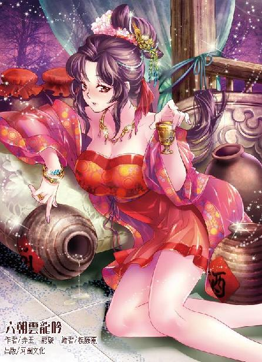

第61集·迷云仙草
汉国篇（13/28）
出版日期：2015-11-12
【本集内容简介】
程宗扬带着乔装成自己姬妾的云丹琉赴陶弘敏之约，双方针对还款事宜勉强达成共识。陶弘敏与云丹琉赌酒，约定一觥酒可借一万金铢。云丹琉向来将酒当水喝，岂难得倒她？而酒意混合“仙草”的效用，让程宗扬终于如愿以偿吃下拥有修长美腿的云大小姐……
汉国天子不是明君已经很惨，还拼命找死，将主意动到汉国商贾之上。陶氏想捞一笔就走，程宗扬百般考量，决定投入局中。秦桧更光明正大地为天子示意士子所拟的奏疏添了一把火，烧往各诸侯身上。就看汉国各阶层是谁死得更快！
※ ※ ※ ※ ※

封面人物：云丹琉
程宗扬觉得以陶五的排场，前来迎接的渡船少不得镶金嵌玉、奢华眩目，谁知来的只是一条普通的渡船，混在来来往往的船只间，毫不起眼。
马车驶上甲板，驾车的御手用木韧锁定车轮，把马车固定好，几名粗壮的汉子撑起竹篙，渡船缓缓离开码头，岸上几名纤夫拉紧纤绳，沿着洛水逆流而上。
陶弘敏兴致勃勃地说起他在途中的见闻，尤其是途中品尝到的诸般美食，说得眉飞色舞，似乎谈兴颇浓。程宗扬哪里有闲聊的心情？他一边操着心，盘算那五十万金铢，一边还要提着心，生怕后面的炸弹炸了，只能打起十二分的精神来应付。
渐渐的，程宗扬觉出异样，陶弘敏虽然口若悬河，谈的却只是声色犬马，非但对生意只字不提，连如今的汉国政局也不置一辞。商人嗅觉最为灵敏，陶弘敏又是做的钱庄生意，触角遍布各种行当，对时局的变化只会更敏感。他对此丝毫不提，倒显得欲盖弥彰。
陶弘敏不提，不代表自己不能提，程宗扬不管自己转捩的是不是生硬，直接道：“陶兄方才说到秋日的野鸡味美，不知可听说越裳献雉？”
“这事儿啊，刚到汉国我就听说了。”陶弘敏笑道：“圣人出，天下平。圣贤在朝，汉国真是好福气。”
“是吗？”
陶弘敏掀起车帘，若有所思地望着岸上，“秋高气爽，碧空如洗，草正黄，兔正肥……倒是吃野味的好时候。”
由于是逆水行舟，除了撑篙的船夫，岸上还有几名纤夫，此时虽已入冬，他们仍然光着膀子，露出古铜色的躯干，正吃力地埋头拉纤。
船上人多耳杂，不是谈话的地方，程宗扬会意地转过话题，只与陶弘敏信口闲谈。
半个时辰之后，船只驶过涧水与洛水交汇处。随着水量的减小，水势减缓，往来的船只也少了许多。纤夫们喘着气直起腰，松开肩上的缆绳，随行的管事拿出钱铢，遣散了纤夫，剩下撑篙的船夫，继续撑着船往上游驶去。
两岸芦苇丛生，人烟渐渐稀少，船只向西行驶了数里，忽然一转，仿佛要撞岸一样冲进芦苇丛中。程宗扬一手扶着车厢，正愕然间，却发现船只已经穿过枯黄的芦苇丛，接着船身一轻，驶进一条不起眼的支流。
这条支流宛如小溪，水面只有两三丈宽，两岸的大树枝桠交叠，将溪口遮得严严实实。穿过树丛，船只已经驶入山间，岸旁山丘起伏，林深叶茂。阳光透过林叶洒在水上，能看到水底漂荡的水草和泥沙。四野人踪断绝，幽静无比。
几棵朽坏的枯木倾斜着倒入河里，树干在水中不知浸泡了多少年，被河水冲刷得犹如石质。本来就已经狭窄的河道被树干一挡，几乎没有行船的余地，但那几名船夫操着竹篙，船身像游鱼一样灵巧地左右一转，便绕开了枯木，无惊无险地稳稳驶过。
直到此时，程宗扬才意识到这条看似普通的船只其实一点都不普通，不仅船身是特制的，船底吃水极浅，而且河道也被人刻意清理过，正好可以容纳脚下的船只通行。若换成寻常船只，即使能找到溪流的入口，也会在途中搁浅。
沿着蜿蜒的河道间又行了数里，船只已经深入山林。浓密的林木间隐约露出一块巨石，背阴的一面生满青苔。一名船夫跳下水，背着铁锚走到岸边，将绳索盘在石上。
船只停稳，船夫们架好木板，马车从船上驶下，眼前却是一条小径，在林间若有若无，不知伸向何方。
程宗扬道：“没想到洛都的金钱豹，竟然这么偏僻。”
陶弘敏笑道：“私人会馆，还是僻静些好，住着也安心。”
沿着小径又行驶了六七里，一处庭院出现在山林间。那庭院外观十分平常，一样是土墙草顶，除了规模略大，与汉国的民居相差无几，只不过四周都是参天古木，只有来时那条小路通往外界，位置十分隐蔽。程宗扬看了看方位，发现这里已经是北邙深处，虽然直线距离离洛都并不远，但一路上山隔水阻，早没有了城市的喧嚣，宛如两个不同的世界，想找到此地却不是易事。
会馆的管事早已在门前等候多时，远远见到马车，便连忙从阶上下来，俯身施礼，称呼道：“五少爷。”
陶弘敏略一点头，马车直接驶入院内。那名管事一路小跑地跟在马车后，一边说道：“已经安排了芳菲院。知道五少爷喜欢吃洛都的鲤鱼，小的已经准备了十几条，都是两斤以上的赤鳍金鲤，就养在院中的池子里。还有少爷要的雉鸡和金鹀，也留了两笼。”
陶弘敏道：“这时候有什么芳菲可看？去东边的邀月院。”
管事一叠声地答应了，连忙派人安排。
马车在一处院内停下，庭院虽然不大，收拾得整洁异常。院内的东北角临着一座山丘，上面矗立着一座木楼，楼顶几乎与树梢平齐，从外面看来，木楼被林木遮掩，登上楼顶，却可以眺望四野。
木楼本身并没有什么出奇之处，一如会馆的其他建筑，低调异常，然而楼内的陈设，却在低调中彰显出非同一般的奢华。地板是用浸过桐油的铁杉木铺成，平整如镜，上面覆盖的藤席不知是用什么草植编成，宛如一层白雪，一尘不染。
木楼正中矗立着四根石柱，从面积来看，木楼的规模与汉国宫廷的恢弘气势根本没法比，但整座木楼完全由四根石柱撑起，内部空间跨度极大，给人的感觉完全不逊于寻常的宫殿。那四根石柱粗如人许，下部镂空成香炉，上方伸出十六盏莲花状的银灯，柱上雕刻的不是通常的龙凤云纹，而是四只长尾分叉的猛兽，它们在柱上或攀或伏，分别朝向四方，雕刻的刀法十分古朴，气势却极为惊人，充满含而不发的张力。
陶弘敏看出程宗扬的疑惑，开口笑道：“程兄觉得这金钱豹雕得如何？”
“这是金钱豹？这是貔貅吧！”
陶弘敏哈哈大笑，“程兄好眼力！”
程宗扬叹道：“原来晴州商人口中的金钱豹是这等神兽，难怪晴州能商遍天下，富冠海内。”
陶弘敏笑道：“一路风尘，程兄不介意先洗漱一番吧？”
“陶兄请便。”
陶弘敏对旁边的美婢吩咐道：“程兄是贵客，你们要小心伺候。”
几名美婢娇声应道：“是。”
木楼东侧是敞开式的，一泓用白石砌成的清池一直延伸到檐下，楼内两侧各设有一间小阁，供宾主盥洗更衣。美婢送程宗扬入内，接着捧来铜盆、巾栉，前来服侍客人洗漱。
一只纤手接过铜盆，云丹琉柔声道：“我来服侍公子。”
云丹琉不由分说地轰走美婢，然后踢上门，一手拿着铜盆放到架上，转身紧张地问道：“你们在路上说了什么？”
程宗扬道：“什么都没说，全是闲聊。”
云丹琉一脸不信，“你们闲聊了一路？”
“不要以为只有你们女人会闲聊，男人间的话题比你想象的要多。”
云丹琉虽然性格强硬，但这笔借贷事关重大，由不得她不心下忐忑，虽然明知道没有答案，还是忍不住问道：“你觉得怎么样？”
“只有三成把握。”
云丹琉失望地说道：“这么少？”
“三成就不错了。”程宗扬道：“这又不是一笔小数目。”
“真的能借到吗？”
“不能也得能。”程宗扬摊开手，“我是没有别的退路了，你有吗？”
云丹琉甚至没有顾得上瞪他，眉眼间满是惴惴不安。
单纯就借贷来说，程宗扬还是有信心开出让陶弘敏满意的条件，但他不可能对云丹琉吐露自己的底线。
自己手上能让陶弘敏动心的抵押品并不多，其中最重要，也是程宗扬绝对有信心能打动陶弘敏的，就是江州的水泥。但水泥同样是江州的生命线，江州别无出产，连人口都不多，水泥的收入是星月湖大营在江州立足的根本。把水泥产业抵押给陶弘敏，相当于把江州的命运和星月湖大营的未来都交给陶氏钱庄。不到万不得已，程宗扬绝不会选择这么做。
除此之外，就是宋国的纸钞。陶弘敏曾经对纸钞表示过超乎寻常的兴趣，自己在宋国推行纸钞虽然称不上突飞猛进，但有官方支持，也算得上顺风顺水。如果拿宋国的纸钞发行权作为抵押，陶弘敏想必不会拒绝。但纸钞同样是自己计划中最重要的一环，失去对纸钞的掌控，长远来看，损失远比失去水泥产业更大。
云丹琉习惯性地想去摸佩刀，可惜摸到的只有玉佩。她恼怒地一使力，险些把玉佩捏碎。
程宗扬提醒道：“克制，克制。”
云丹琉深吸了一口气，然后露出微笑。
“非常好！”程宗扬满意地说道：“现在过来给我洗脸。”
“去死！”云丹琉一把按住程宗扬脑后，把他的脑袋塞到铜盆里。
程宗扬一头撞进盆里，半晌都没动静。云丹琉吓了一跳，赶紧扶他起来，谁知程宗扬刚扭头，就口一张，喷了她一脸水。
这要能忍得下去，就不是云丹琉了。她揪住程宗扬，当场就要讨回来。程宗扬也没客气，反手拧住她的手腕，顺势一个肘击，要把云丹琉撞开。
云丹琉手腕用力一带，卸去他的肘击，随即提膝朝他腰腹撞去。程宗扬一手揽住她的膝弯，同时用上朱老头嫡传的阴人招术——一脚踩住她的脚背。云丹琉立足不稳，眼看就要摔倒，但她煞是硬气，两手紧紧扯住程宗扬，就算摔倒，也要扯住这个无耻之徒一起摔。
两人怕惊动外面的侍婢，都屏住气没有作声，结果跌倒时踢到旁边的木架，铜盆“咣啷”一声掉在地上，一盆水泼洒出来，溅得两人满身都是。
美婢闻声推开门，只见两人搂抱着躺在席上，那位公子一手还揽着女子的大腿，姿势暧昧之极，不由抿嘴一笑，轻轻掩上门，不去打扰两人的好事。
云丹琉顿时面红过耳，狠狠瞪了程宗扬一眼。
程宗扬在她耳边道：“让你别那么冲动，坏了大事怎么办？”他声音很轻，语气却十分严肃。
云丹琉也冷静下来，她虽然好强，却不是蛮不讲理，略一迟疑便说道：“是我的错。”
“知道错就好，不要因为你一时冲动，连累了云家。”
云丹琉没有作声，只微微点了点头。
程宗扬站起身，随便擦了把脸，抹去身上的水渍。云丹琉接过巾帕，“让我来。”
程宗扬一脸讶异，云丹琉却没有说什么，只仔细帮他擦干衣服。
美婢重新打了水来，见状又是一笑。
程宗扬拿出一枚银铢丢过去，笑道：“辛苦了。”然后推门而出，留下云丹琉在阁中梳洗。
楼中已经摆好案几，陶弘敏更换好衣物，悠闲地坐在席间。那名管事单膝跪地，正在他面前禀报些什么。
与汉国习俗相同，楼中也设有帷幕，一旦放下，可以在楼内分别形成几个独立的空间，此时帷幕都被卷起，能看到四根石柱中间铺着一块两丈大小的深蓝色地毯，地毯周围织出缠绕的花枝，色彩鲜亮逼人，一眼望去，中间的深蓝色仿佛深不见底，坐在上面，就像漂浮在夜空中一样。见到程宗扬过来，陶弘敏挥手让那管事退开，一边笑道：“程兄，来看看这两株草怎么样？”
案上放着两只玉碟，碟中各有一株碧绿的植物，茎身粗如拇指，三寸多长，叶片略显肥厚，其形如卵。下部的根须已经被切掉，露出的截面犹如碧玉，看不到一丝杂质。
陶弘敏笑道：“程兄运气不错，正好得了两株仙草，咱们一人一株。”
旁边的美婢拿起竹刀，将草茎切下一截。另一名美婢用玉匙盛起，送到程宗扬嘴边。
看着是草茎，吃到嘴里却如同琼浆，舌头一卷便仿佛化为一团清水，没有留下任何残渣，舌尖只有一股淡淡的甘甜气息。
陶弘敏闭上眼，享受着仙草的滋味，片刻后再睁开眼，笑道：“如何？”
程宗扬又尝了一口，闭目片刻，然后再睁开眼，眼前的景物似乎变得明亮而又清晰，不由讶道：“这是什么草？”
“仙草无名，唯以仙草为号。”陶弘敏道：“此物最补心神，对我等劳心费神之人最是大补。食之不仅明目清心，而且延年益寿。总商会的老头子们每年都要重金求购。这次也算走运，正好遇到两株。”
仙草并不大，两人各吃几口，便分食一空，只留下几片翠叶。程宗扬犹豫着是不是要连叶片一起吃了，陶弘敏笑道：“仙草茎宜男食，叶宜女用。这些叶片对女子大有益处，程兄不妨留下，给身边的侍姬服用。”
“有什么好处吗？”
“这仙草对男子可以清心明目，对女子则可洁体养颜。而且别有妙处，”陶弘敏神秘地低笑道：“程兄试过便知。”说着他拿起一片翠叶，“今日谁服侍的好，便赏谁一片。”
那些美婢闻言，眼睛都亮了起来，接着有人拿来玉盒，将叶片小心收起。
程宗扬见堂上只有两席，不由问道：“不是说陶兄还有一位朋友吗？”
陶弘敏道：“赵兄酷喜游猎，途中见猎心喜，要迟上一两日。”
程宗扬正了正身形，“既然如此，咱们就说正事吧。”
“急什么？”陶弘敏道：“我这赶了一天的路，可还饿着呢。先开筵席，咱们边吃边聊。对了，程兄，我还没问你呢，你在临安好好的生意不做，怎么来汉国了？”
程宗扬苦笑道：“一言难尽。”
陶弘敏微笑道：“单是首阳山的铜矿，未必能让程兄亲自跑一趟吧？”
首阳山铜矿在汉国籍籍无名，在临安却是街知巷闻，以陶弘敏的耳目，当然不会不知道。
程宗扬道：“我可不比陶兄家大业大，这铜矿对我来说也不是小利了。”
“铜矿难道还比得上程兄的钱庄吗？”陶弘敏笑道：“纸钞可是点纸为金、无本万利的营生。”
就怕他不提，只要他有兴趣，什么都好说。程宗扬哈哈一笑，“陶兄既然这么看好纸钞，有兴趣参一股吗？”
“哦？”陶弘敏目光微微一闪。他对程宗扬此行的目的心知肚明，江州还款在际，以江州的财力肯定是还不上的，程宗扬邀自己在洛都见面，无非是为此缓颊。可程宗扬一开口，就拿出纸钞的股份，这么大的手笔，怎么也不会是只因为江州的欠款吧？
陶弘敏心念电转，本来想一探究竟，这时又耐住性子。
如果换作别人，陶弘敏早已摆明车马，将还款的条件一列，不答应就拉倒，陶氏钱庄有的是办法收回欠款。但自从听说程少主不仅在晋宋两国播云弄雨，如今又在汉国立稳脚跟，陶弘敏惊讶之余，也多了些别的念头。
陶弘敏沉吟着未曾开口，只听环佩轻响，一名丽人缓步而出，柔声道：“公子。”
陶弘敏抚掌赞道：“果然是国色天香！和程兄的美姬一比，这些婢子都成了烧火的丫头。”
程宗扬也没想到，云丹琉一旦换上女装，居然女人味十足。虽然不施脂粉，但肌肤姣丽，眉目如画。她身着曲裾，腕带玉环，长发梳成云髻，头上的凤尾金簪，耳后的红宝石坠子，腰间的羊脂玉佩，无不衬托出她动人的风采。尤其是她神情间那种低眉顺眼的柔婉，让程宗扬都不敢相信眼前的丽人真是那个只喜欢靠拳头说话的云大小姐。
云丹琉这会儿扮的是姬妾，当然不会给她另开筵席，只按照规矩，依着主人屈膝跪坐，为主人斟酒布菜。
陶弘敏赞道：“如此美色，当浮一大白！”说着举觞道：“酒来！”
美婢斟上酒，陶弘敏一饮而尽，接着搂过那名美婢，剩下半口又渡到她嫣红的小嘴里，然后哈哈大笑，一副放浪形骸的花花公子模样。
自己要学他这模样照搬着来一套，云丹琉就算不当场翻脸，事后也铁定要砍死自己。程宗扬只能装模作样地搂住云丫头的纤腰，把觞中的烈酒一口气喝完，一滴都没敢留。
早已准备好的菜肴流水般送上，两条赤鳍金鲤是从池中刚刚捞出来的，现杀现做，只略用了一点盐调味，滋味便鲜美无比。然后是捣珍、炮豚、渍儿羊、淳熬……之类的汉国珍肴，比起当日自己请友通期吃的，无论材质还是烹饪的手法都更胜一筹。
主菜除了赤鳍金鲤，还有一道烤炙的金鹀。金鹀只有鸡蛋大小，除去头爪，烤得通体金黄。程宗扬正打算像吃烤鹌鹑那样撕开品尝，云丹琉却用银匙将整只金鹀盛起，送到他嘴边，一边小声传音，“含着吸。”
程宗扬依言将金鹀整个含到口中，轻轻一吸，一股热流涌入喉中，整只金鹀仿佛一团酥滑的油脂，浓香四溢。
陶弘敏半闭着眼睛，仿佛陶醉一样品尝着金鹀的美味，良久才叹道：“这金鹀是世间绝品，一只便价值万钱。可惜每宴只能品尝一只。”
程宗扬还是头一次吃金鹀，要不是云丹琉指点，刚才就要露怯了。他笑着赞叹道：“果然是世间绝品！每宴一只便已足够，再多吃就要折福了。”
陶弘敏拍着大腿道：“程兄说的没错！咱们这些人最要紧的是什么？不是生意，更不是赚钱！最要紧的是惜福养生，多活些年，才好多享受些。”
程宗扬心头微动，这才是世家子弟吧，什么奋斗努力，对他们来说都没多少价值，他们唯一在乎的就是养生和享受了。
“程兄来尝尝这蜜饯。”陶弘敏笑道：“此地不比盘江，时鲜少了些，程兄切莫见笑。”
席间除了菜肴，还有各色瓜果。如今已是初冬，汉国酒席上用得多是干果，金钱豹奉上的却有不少时鲜果子，甚至还有几只北方少见的椰子。如果算上成本的话，已不是一般的贵重了。
听到陶弘敏提及盘江，程宗扬只微微一笑，也没有接口。这两年时常有人打听他的背景，可南荒哪里是那么容易走的？除了云家的商队，连能穿过白龙江口的都寥寥无几，更不用提南荒深处的盘江。外界关于盘江程氏的消息，全是自己通过各种渠道放出去的，根本不担心有人揭穿。
席间的酒水也不是寻常的陈酿，而是蒸馏法酿出的高度酒。虽然比不上程宗扬从前喝过的高度白酒，但也是六朝少见的烈酒。两人谈笑风生，觥筹交错，旁边的美婢更是殷勤服侍，在席间歌舞翩跹，以娱宾客。她们笑语晏晏，虽然只有一主一客，却使得宾主尽欢。那种娇媚的姿态，连云丹琉的风头都盖过了。
半个时辰之后，陶弘敏已经面露醉意，搂着美婢笑道：“程兄这位美姬……尚不解风情啊。”
云丹琉脸上一僵，她脸都快笑疼了，结果就得了一个不解风情的评价，这简直是对自己这番辛苦努力的恶毒嘲讽。她突然有点后悔，今天来这里也许是个错误，万一因为自己的缘故，把那个无耻之徒的事情搞砸了，那可怎么办？
程宗扬笑道：“陶兄这就不知道了，如此美人，可要仔细调教才得趣。就好比这捣珍，须得多番炮制，细细品尝才有滋味。”
陶弘敏一愕，然后大笑道：“妙！妙！妙！以美食比美人，别有趣味。慢慢炮制，细细品尝……程兄此言，陶五受教了。来！我再敬程兄一杯！”
两人各自饮尽，准备好的五斤烈酒已经下去大半。陶弘敏喝起了兴致，让人又送上一坛，程宗扬推辞道：“这一坛我已经尽够了，再多我可撑不住了。”
“撒谎！”陶弘敏毫不客气地揭穿他，“我可是听张侯爷说过，程兄酒量如海，千杯不醉。”
“张少煌？你就听他吹吧。”程宗扬顺口道：“你是在哪儿见的张侯爷？”
“还能是哪里？当然是临安。”陶弘敏玩笑道：“张侯爷在临安如鱼得水，怎么舍得回去？”
“还是因为江州之事？”
陶弘敏道：“这我就不知道了。不过听说宋国因为方田均税法，各地都出现歉收，如今正有意与晋国商谈平籴。”
程宗扬知道，歉收的不仅是宋国，晋国的粮食产量也同样大幅下跌。平心而论的话，这事九成都是天灾，但陶弘敏言语中透露出来的意思，宋国正有人把此事往方田均税法上推。项庄舞剑，意在沛公，看来贾师宪又要焦头烂额了……
“听说程兄名下的商会，囤积了不少粮食，”陶弘敏道：“不知程兄是否肯割爱呢？”
程宗扬心里微微一震。没想到陶弘敏放着纸钞不提，居然提起粮食。晴州气候适宜，土地肥沃，而且耕作技术远超他处，虽然只有一州之地，但流通的粮食不逊于六朝，可以说晴州商会是六朝最大的粮商。陶弘敏如果向自己卖粮食，那丝毫也不奇怪，可他竟然反过来向自己收购，这试探的意味未免太过明显……
程宗扬讶道：“陶兄坐拥晴州，竟然还要向小弟购粮？”
“千里不贩籴，百里不贩樵。”陶弘敏道：“晴州的粮食哪里比得上本地的方便？”
“临安的水路与晴州相连，贩运粮食也用不了多少成本吧？”
陶弘敏夸张地叹了口气，“奈何晴州与建康无水路相连？”
云丹琉怕露出破绽，一直低着头，闻言不禁悄悄举目，看了陶弘敏一眼。建康与云水通航的唯一渠道，就是筹备中的广阳渠，这是云氏的禁脔，绝不容人染指。陶弘敏提及此事，让她立刻戒备起来。
程宗扬拿起酒觞，徐徐喝完，然后放在案上，“粮食之事不必再谈。”
陶弘敏手指轻轻敲着几案，笑道：“那程兄想谈什么呢？”
云丹琉心里打鼓，一手挽袖，一手执壶，努力作出温婉的样子斟上酒。
程宗扬举觞道：“我先敬陶兄一杯。”
陶弘敏用三根手指托起酒觞，浅浅饮了一口，微笑道：“程兄，你不会给我出难题吧？”
程宗扬道：“当然不会。”
陶弘敏道：“江州的借款是我亲手放出去的，本来利息已经极低了。如果再延期，我可没办法向家里面交待。”
程宗扬一脸郑重地说道：“我可以给陶兄打个五十万金铢的欠条。”
“噗！”陶弘敏刚喝的酒顿时全喷了出来，“多少？我没听清！”
※ ※ ※ ※ ※
程宗扬伸出一只手，张开手指，“五十万。”
“程兄，你知道五十万金铢是多少吗？”陶弘敏叫道：“那可是一百万贯！十亿铜铢！”
程宗扬叹了口气，“我知道很多。”
陶弘敏下意识地叩着几案，片刻后挥了挥手，“你们都出去。”
美婢放下玉匙银箸、酒具乐器，悄无声息地退到楼外。倒是那个程少主带来的姬妾，主人没有开口，她也没有起身，仍留在席间。
陶弘敏看了云丹琉一眼，没有说什么，然后转过目光，静静看着程宗扬，心下不住盘算。
程宗扬也坐直身体，努力压下酒意。陶弘敏人醉心亮，这一仗有的打了。
“孟掌柜当时借贷，本息合计不过二十三万金铢。”
“没错。除了这二十三万，剩下二十七万都是我这次借的。”
“开什么玩笑！”陶弘敏有些失态地叫道：“那二十三万金铢让你一句话就不还了？还要再借二十七万？”
“不是不还，是延期。”
“我说程兄，你不会以为我陶氏钱庄的钱是好借的吧？”陶弘敏道：“上次我给你的利息可是特例！特例！你可以打听打听，我们陶氏钱庄向外借贷，什么时候月息低于四分的？五分、六分也是常事！若按六分计，你一年单是利息就要还三十万，而且还是先扣息，你拿到手是二十万，一年后还五十万……”
“按上次借贷的条件，月息两分，不扣利息。”程宗扬道：“我给你打五十万的欠条，你给我二十七万金铢，一年之后连本带息，还你六十二万。”
陶弘敏奇道：“明年这时候你还得起吗？”
程宗扬不由苦笑着摸了摸鼻子。自己来钱的路子不少，但花钱的地方更多，一年之后要想还清，除非云家再弄来几船白银。可不借的话，眼下这一关就过不去，明知饮鸩止渴，但也顾不得了。
“我给你交个底，”陶弘敏慢慢说道：“江州的款项可以延期六个月，但首先，晴州鹏翼社的产业我要收走，不然无法交待；其次，延期内利息以月息四分计；第三，必须用纸钞抵押。”
“一年。利息不变，而且不能收走产业。”
陶弘敏叹道：“程兄，你也知道，陶家的少爷又不是只有我一个。这次借款延期，我已经很难交待了。如果不收回鹏翼社的产业，下次和程兄打交道的，说不定就不是我了。”
“双倍纸钞抵押。”
“即使收回鹏翼社的产业，也至少要五十万的纸钞作为抵押。”
程宗扬深深看了他一眼，“那些纸钞可是金铢！”
“只有兑换过才是金铢。”
“你的意思是……”
“抵押期内纸钞不会兑换。”陶弘敏笑道：“所以，你最好不要逾期。”
如果逾期，陶弘敏完全可以拿着抵押的五十万纸钞到程氏钱庄兑换成金铢，如果程氏钱庄拒绝承兑，就等于拿程氏钱庄的信誉给借款陪葬。拿到这五十万金铢的抵押，就是拿住了程氏钱庄的命脉。但程宗扬又不能不答应，毕竟陶弘敏说得明白，只是抵押，如果自己拒绝，那还款的诚意就很可疑了。
程宗扬退让一步，“月息三分，鹏翼社的产业不能收走。”
“我想，程兄不会让我难做吧？”
“一年期限，月息三分，五十万金铢的纸钞抵押，外加江州的土地。”
陶弘敏眼睛微微一亮，“江州城内的土地？”
“城外的土地。”
“你开什么玩笑？”陶弘敏怫然道：“我要江州的农田干什么？自己去种地吗？”
“城内的土地都是有数的，你花钱都买不来。”
“除非是城内的，否则免谈。”
程宗扬为难地说道：“城内的话，我最多给你二十亩。”
陶弘敏毫不含糊地摇头，“二十亩太少。”
“五十亩。”
“一百亩。”陶弘敏道：“江州田地每亩不过一二百银铢，城内的土地即便再贵，一亩也不会超过八十金铢。一百亩八千金铢，已经够少了。”
“横塘的土地每亩可是要二百金铢。”
“那是建康啊，大哥，江州的地价能和建康比吗？”
程宗扬叹道：“这回你可是占了大便宜了，江州的土地肯定会升值。”
陶弘敏翻了个白眼，“你要是不舍得，那我就不要了。”
“别！就这么定了吧。”
反正是小狐狸的地，怎么卖自己都不心疼。程宗扬拍板道：“江州城内一百亩土地，纸钞五十万作抵押，交换还款期限延期一年。”
“月息四分。”
“三分。”程宗扬努力挣扎了一下。
“洛都的月息可是七分。”
程宗扬叹了口气，举起手，与陶弘敏击了一掌。
眼看双方三言两语便击掌立约，云丹琉忍不住道：“还有要借的钱呢？”
陶弘敏此时心情正佳，他已经做好江州借款延期偿还的准备，打的算盘就是能要回多少算多少，眼下能拿到江州的土地，也是意外之喜，闻言笑道：“小美人儿，还真知道替你家公子着想。怪不得你家公子疼你呢。”
这样的调笑，云丹琉这辈子都没听过，那感觉就像吞了一包炸药，整个人都要爆炸了，一张俏脸顿时涨得通红。
见到她如此羞态，陶弘敏调笑的心思更浓。“借钱好说！”他指着案上的大觥道：“只要你能喝下一觥，我就借给你家公子一万金铢，怎么样？”
那酒觥是用来分酒的，一觥能盛大半斤，席上用的又是烈酒，莫说一个女子，就是寻常男子，酒量略差，喝不了半觥就会醉倒。
陶弘敏只是随口调笑，没想到那个美人儿居然眼睛一亮，“真的？”
程宗扬这会儿的感觉就好比手里攥着一颗炸弹，自己千小心万小心地藏着掖着，结果陶五喝得昏头打脑，二话不说，凑过来一把就给点着了。自己一边听着引信“滋滋”乱响，一边还要谈笑风生，没搞出心脏病都是好的。陶五这厮是没见过云大小姐豪饮的英姿，他小子一会儿看到云大小姐一手拿着酒坛，一手拿着大觥猛喝的模样，非把他吓得尿裤子不可。
“陶兄开玩笑的，”程宗扬干笑道：“笑谈，笑谈。”
“不开玩笑。”陶弘敏认起真来，豪气干云地拍案道：“她只要喝完一觥，我就陪她一觞。”
陶五这边是没指望了，程宗扬只好转头向云丹琉施压。
“大觥饮酒是男人干的事！”程宗扬拼命把炸弹往水里按，“女人要优雅一点，你喝什么喝？”
云丹琉眼珠一转，然后拿起一根细细的银管，毅然道：“我用这个！”
那银管是用来喝椰汁的，做工极为精巧，云丹琉毕竟是豪门出身，虽然性格豪爽，但该有的淑女教育一点也不缺，单看她把银管拿在手里，姿势就不是一般的优雅。于是大家就看着那个美人翘起尾指，用中指和无名指扶着细细的银管，精致的红唇宛如花瓣，像吸果汁一样，斯斯文文地吸着烧刀子一样的烈酒。
陶弘敏嘴巴张成圆形，眼睁睁看着那个丽人优雅地拿着银吸管，不带喘气地就把一觥烈酒吸得干干净净，接着又是一觥……又是一觥……
程宗扬很想捂脸。云丹琉喝酒的姿态不是不优雅，事实上非常优雅，非常有教养，一举一动都淑女得要命，问题是她喝得实在太快了，一口气就是一觥，一口气就是一觥，一眨眼就是好几觥酒。
片刻后，云丹琉轻轻吐了一口酒气，展颜笑道：“五万金铢了。”
陶弘敏怔怔抬起脸，看了程宗扬一眼，“她好像喝得比咱们还多？”
程宗扬咳了一声，“好像吧。”
“她能喝十觥？”
你要是知道这丫头出海的时候是拿酒当水喝的，恐怕就不这么说了。程宗扬含糊道：“难说。”
陶弘敏喃喃道：“总不可能喝二十觥吧？”
程宗扬看看大觥的尺寸，有点不确定地说道：“……不能吧？”
“她能喝多少？”
“这个……我也不知道。”
程宗扬心道：我就没有见她喝醉过，天知道她量有多大。
云丹琉又是一觥喝完，轻轻呵了口气，玉颊浮现出两片酡红。程宗扬举觞说道：“陶兄，咱们也干一杯。”
陶弘敏没想到把自己给绕进去了，酒觞虽小，但一连六觞下去，也有大半觥了。他咬着牙喝完，心里突突直跳，知道自己是快到极限了。
等云丹琉喝到第七觥，陶弘敏终于坐不住了，凑过来想看她是不是作弊了，这银管会不会别有乾坤？
第八觥喝完，陶弘敏嘴巴已经张得够塞进去俩鸡蛋。
第九觥，刚上的一坛酒已经喝完了。还是在云丹琉的主动提醒下，陶弘敏才叫人送来一坛，仍然是最烈的烈酒。
美婢被重新叫进来伺候，看到那个娇滴滴的美人儿论觥喝酒的豪态，也不禁惊呆了。
第十觥……第十一觥……
程宗扬不禁心里打鼓，五十万金铢是自己狮子大开口，准备和陶弘敏讨价还价用的，云家要想渡过难关，底线是十七万金铢。十七觥，超过十斤烈酒，就算是白开水，十斤下去也不轻松。
日色已暝，美婢轻手轻脚地点亮银灯。整座木楼内都悄无声息，所有人都屏住呼吸，一眼不眨地看着案上的酒觥。
酒液以肉眼可见的速度在减少，不多时，又一觥烈酒见底，每个人心里都念着同一个数字：十二。
云丹琉粉颊醉意醺然，一双美目仍然清亮无比。两名美婢用银勺盛酒，小心斟入觥中。陶弘敏好不容易又陪了一觞，这会儿用一把折扇抵住下巴，一边艰难地吐着酒气，一边目光在酒坛、酒觥、银管、云丹琉和程宗扬之间游移不定，不知道是不是在找后悔药吃。
第十二觥喝完，新上的一坛酒已经近半。第十三觥，云丹琉饮酒的速度明显慢了下来，她脸上的醉意愈发明显，原本英武的双眉此时微微颦起，拿着吸管的手指也仿佛略显沉重。但她依然扶着银吸管，缓慢却坚定地将又一觥烈酒喝完。
等她放下银管，玉颊一片酡红，额头、鼻翼和粉颈都隐约渗出汗珠。
一名美婢调了碗解酒的蜂蜜水，小心奉上，却被程宗扬拦住。他知道，云丹琉饮酒的时候从来都不喝水，按照程宗扬的理解，云丹琉出海远洋时，长期以酒代水，对她来说，酒和水差不多算是一种东西。
陶弘敏也豁出去了，他晃了晃脑袋，拿起酒觞，“我们两个须眉男子，居然加起来还比不上一个女子？喝！”
第十三觥喝完，云丹琉略停了一下，捻起一颗龙眼大小的葡萄，轻轻一挤，将果肉挤入口中。
陶弘敏微微松了口气，这一觥喝完，应该差不多了吧？他看了程宗扬一眼，却不知程宗扬也转着和他一样的念头——云丫头这一觥喝完，应该差不多了吧？云丹琉酒量再好也是有限度的，毕竟这不是她平常喝的淡酒，而是入喉火辣的烈酒，两坛足以喝翻五名壮汉。两人心里都在默默念着，她喝完这一觥，已经差不多了吧？
眼看云丹琉吃完葡萄，酡红的玉颊醉意略微消淡了一些。正当众人都以为她已经喝到极限时，没想到云丹琉喝酒的速度又快了起来，第十四觥一口气喝完，接着第十五觥……
陶弘敏原本已经有了七八分酒意，与程宗扬又干了几杯，早已过量，这会儿倒在一名美婢怀里，醉熏熏吐着气，只眼睛勉强还保持清醒。
程宗扬也觉得眼花耳热，一样是勉力支撑。倒是云丹琉，双眼越来越亮，兴致也越来越高。
眼看着云丹琉喝酒的速度越来越快，程宗扬心里暗叫不妙，他是喝惯酒的，看得出来云丹琉这会儿已经失控了，情绪越来越亢奋。
案上放着第十六觥酒，也是第二坛最后的残酒。云丹琉还没有开始喝，就已经吩咐道：“再拿一坛来！”
“行了，”程宗扬果断阻止云丹琉，“别再喝了。”
云丹琉挑眉道：“不够。”
陶弘敏醉得东倒西歪，闻言下巴险些掉下来，都两坛了还不够？
程宗扬却知道云丹琉说的不够，指的是借款。现在她喝了十五觥，就是十五万金铢，离云家的底线还有两万。
“行了，这些已经足够了。”程宗扬拿起酒觥。
“给我……”
“别喝了……”
“不行！我要喝……”
“不能再喝了！”
“我还能再喝一坛！”
陶弘敏目瞪口呆，眼看着那个风姿艳丽的美人儿硬把酒抢过来，这回她干脆连吸管都没用，直接拿起大觥痛饮。
当着众人的面，程宗扬不好硬夺，只好干笑道：“我这个小妾……一喝酒就失态，让陶兄见笑了。”
“笑什么笑？”陶弘敏喷着酒气道：“可笑的是咱们！什么千杯不醉……碰上你这小妾，全瞎啊！再……再来一坛！”
云丹琉双手捧着酒觥，尾指翘起，像喝水一样将满觥烈酒喝完，笑道：“好酒！”
旁边的美婢无不充满敬畏地看着她，连大气都不敢出。
陶弘敏由衷道：“佩服！佩服！没想到程兄身边一个小妾，竟然如此海量。我陶五今日真是大开眼界……”
云丹琉丢下酒觥，拍案道：“再来一坛！”
程宗扬赶紧抱住她，“我这小妾已经喝醉了，今日酒局就此作罢。”
“不行！我还能再喝一觥！”
程宗扬将那碗蜂蜜水倒进觥内，“好了，好了，就剩这些了。”
云丹琉皱眉道：“这么少？喂，我喝这一觥算吗？”
陶弘敏脑袋像捣蒜一样连连点头，“算！算！”
云丹琉尝了一口，嘟囔道：“好辣……”她捏住鼻子，比喝酒还艰难地将那觥蜂蜜水喝完，闭上眼微微喘着气，然后道：“还有十觥。”
再喝下去，云大小姐非原形毕露不可，程宗扬不由分说地扶起她，“剩下的明天再说。”
“那怎么行？”
“我说行就行！”
云丹琉靠在程宗扬肩上，忽然想起什么似的抬起头，眼睛亮闪闪地对陶弘敏道：“你服不服！”
陶弘敏一叠声道：“服！服！”
云丹琉眉开眼笑，“好吧。今天我就放你一马……”
没等她说完，程宗扬就把她扛在肩上，往楼上走去。
“我自己能走……”
“别吵！”
程宗扬也喝得差不多了，这会儿全靠强撑着才压下醉意，努力保持清醒。他一边扶着栏杆，拼命稳住身体，一边跌跌撞撞地上着楼，一边还要防着云丹琉的挣扎，免得两人一起滚下楼去。
“我自己走……放开我！”
“别啰嗦！”
云丹琉忽然瞪大眼睛，“你占我便宜！”
“干！”
程宗扬丢手放开她。云丹琉便脚下一软，险些跌倒，她一手扶住门框，纳闷地说道：“我们是在船上吗？浪好大……”
“没错，你小心点，船要翻了，你可就喂鱼了。”程宗扬一边说，一边推开门，把云丹琉拖进屋里，接着扭头一看，然后就呆住了。
眼前的房间跨度差不多有三丈，中间摆着一张丈许大小的睡榻，上面铺着合欢衾、鸳鸯枕，四周张着透明的粉红纱帐，充满淫靡而旖旎的气息。
单是一张床也不算什么，可室内一侧还摆着交欢用的春凳，梁上垂着十几根参差不齐的皮索，下面有的带着银环，有的带着皮扣，还有的带着座兜……墙上挂着鲜红的绳索、漆黑的九尾鞭，还有束手枷、各种皮制的头套、兽尾……另一边的博古架上摆放着各种银制、玉制、木制、皮制的器具，一大半程宗扬都看不出名堂，室内一角甚至还放着一只木马，单是各色花样的鞍具就有六七种。
“妈的……”程宗扬惊叹道：“城里人真会玩啊！”
云丹琉也惊叹道：“这么大的船舱？”接着又担心起来，“船体的密封性和强度会不会下降？”
“你就放一万个心吧，这船肯定不会漏水。”程宗扬把云丹琉往床上一丢，赶紧去找帷绳。汉国宫室一般都设有帷幕，他急着把帷帐放下来，免得云丹琉看到四壁那些没羞没臊的器具。
幸好云大小姐从不在意屋里陈设的小玩意儿，她往床上一躺，倒像是清醒了一些，又坐了起来，兴奋地说道：“我今天怎么样？”
程宗扬顺着她的口气道：“厉害！厉害！”
“我还能再喝一觥！”
“我知道。”
“骗你的。”云丹琉咯咯笑道：“其实我还能再喝十觥！”
“你能喝十桶！”
“瞎说。”云丹琉道：“我最多只能喝一桶。”
你还真论桶喝啊！
程宗扬好不容易找到帷幕的系绳，连忙一拉，四周帷幕垂下，他一口气还没松开，入目的情形让他险些喷出一口老血。人家的帷幕画的都是山水花鸟，金钱豹的帷幕上画的全是人物，而且还是不穿衣服的人物画，一对一对全是等人大小的裸男裸女，正用各种姿势干着妖精打架的勾当。
这还不如不放呢！程宗扬一头是火，赶紧又把帷幕拉起，匆忙间手上力度一大，竟然把其中一根系绳拉断了，结果帷幕收起三面，还留下一面怎么也收不起来，上面一个女子巧笑嫣然地张开双腿，一只妙物正对着床榻……
“咦？这个……”云丹琉偏着头，好奇地望着那副帷幕，“……这个我好像认识。”
“你认识个鬼啊！”
程宗扬只觉太阳穴突突直跳，脑门都快炸了，他扯了一把没扯下来，索性把帷幕一卷，打了个大结。
幸好云丹琉没有在意帷幕，她往床上一躺，脑袋碰到一个硬物，随即从枕下摸出一只精巧的木匣，讶然道：“咦？这是什么？”
程宗扬回过头，只见那只木匣里放着一堆各式各样的古怪器具，比如两个寸许粗的开口银环，下面还着一个舌头一样的银托。几个玉制的瓶子，三枚精致的银夹，几条缠成一团的彩色丝带，一只小巧的银制唧筒，一对拇指大小的玉塞，几个压成小兽形状的香锭……
当云丹琉拿起里面一个周围满是细长绒毛的粉红皮圈，程宗扬顿时又吐了口血，他一把夺过皮圈，扔进木匣，紧紧盖上。
云丹琉不满地推了他一把，“这是什么啊？”
程宗扬厉声道：“不知道！”
那玩意儿叫羊眼圈，可我能告诉你吗？
“我看到里面有一对银戒指……”
戒指？你见过那么粗的戒指？程宗扬虽然没用过，但猜也能猜出七八分来。那东西九成就是传说中的银托子，可不是用来套手指的……
门外传来几声轻响，程宗扬连忙道：“快上床！”
云丹琉刚要发怒，恍然想起自己的身份，连忙道：“哦，好的，好的……对了，我是公子，你是姬妾……”
程宗扬黑着脸道：“反了！你是小妾！”
“哦，我是小妾……咦？我什么时候嫁给你了？”
“闭嘴！”
程宗扬一把将她塞到被窝里，接着一名美婢在门外道：“程公子？”
“进来吧。”
美婢捧着一只漆盘进来，上面放着一只木匣。
程宗扬道：“放在那边吧。”
美婢放下托盘，然后道：“奴婢们都在阁外，公子若有吩咐，只用拉这个铜铃便是。”
程宗扬看到床侧有一个拉环，随意点了点头，然后道：“五公子呢？”
美婢抿嘴一笑，“少爷怕打扰公子……的好事，去了芳菲院安歇。”
程宗扬干笑道：“多谢五公子的好意了。”
那美婢小心退下，轻轻掩上门。程宗扬不放心地把门插上，刚回头就听到云丹琉道：“这是什么？”
美婢刚送来的木匣已经被翻了个底朝天，云丹琉拿着翠绿如玉的仙草叶子，好奇地对着灯光打量。
程宗扬没搭理她，只吩咐道：“把外衣脱了。”
云丹琉怒道：“凭什么！”
“你想被人看出来晚上你是合衣睡的吗？”
云丹琉恍然道：“也是哦……喂！这是什么？”
“那是仙草的叶片。”
“仙草？”
“能吃的。”
云丹琉想也不想就把叶片放到口中，略微一含，讶然道：“怎么没有了？”
“是不是入口即化，吃着和水一样？”
“这么神奇？”云丹琉又尝了一片，接着“咯咯”笑了起来，“真好玩……”说着一片接一片，把那些仙草叶子吃了个一干二净。
程宗扬无奈地摇了摇头，拿起瓷盏，倒了杯茶，对云丹琉道：“你喝不喝？”
“什么酒？”
“算了，你还是别喝了。”
云丹琉皱了皱眉头，“好热……”
“让你喝那么多酒。”
云丹琉道：“有点难受……”
“空腹喝那么多酒，能不难受吗？”程宗扬道：“要不你吃点东西，胃里好受一些？我看到有点心……”
云丹琉摇了摇头。
“真不行你就运功把酒逼出来。”
“真的吗？”
程宗扬摸着下巴道：“传说中……高手都是这么干的吧？”
“我来试试！”
云丹琉说做就做，当即盘膝坐好，双手放在膝上，眼睛还没闭上，就眉头一挑，气势汹汹地问道：“你要干嘛！”
程宗扬爬到床上，没好气地说道：“还能干嘛？你睡床上，我睡地上。”说着扯下被子，铺到榻旁。
云丹琉当时就怒了，“你把被子拿走，我盖什么！”
“你不是要炼功吗？”
“谁说我要炼功？”
“你不炼功怎么逼酒？”
“谁说我要逼酒，我又没喝醉！”
“都这样了还没喝醉？”
“你以为我喝醉了吗？真是可笑！”
云丹琉凤目圆瞪，她站起身，双手叉腰，用动作来增强自己的说服力，“我虽然喝了酒，但只喝了一点点！”说着她用力一挥手，“我自己的酒量我自己难道还不知道！离喝醉还差得远呢！”
“得。”程宗扬把被子横过来，“你盖一半，我盖一半，行了吧？”
云丹琉哼了一声，用力把被子扯了扯。
程宗扬实在是酒意上头，也没精神跟她拉扯，幸好被子够大，两个人一个床上一个地上还能勉强盖住，他随便盖了一角，便倒头睡去。
时值初冬，夜凉于水。朦胧中，程宗扬只觉得四处漏风，虽然盖着被子，却浑身冰凉。他本能地这边扯一下，那边扯一下，想把身体盖住。那床大红的锦衾渐滑渐低，越滑越低……
忽然“呯”的一下，一个香软的身体掉到身上。
程宗扬蓦然惊醒过来，却是云丹琉连着被子一同被自己扯下来，摔入怀中。
他睁开眼，然后看到一张布满红晕的俏脸，和一双璀璨的星眸。
※ ※ ※ ※ ※
云丹琉只觉身上像火一样烫，喝下的酒液仿佛聚集在丹田中，随着心跳，一波一波扩散到全身。她喝过很多次酒，却从来没有像这一次一样，身体有种说不出的难受，如火的酒意在皮肤下游走着，似乎随时可能喷涌出来。
她低低喘了口气，觉得怎么都睡都不舒服，正卧、侧卧、俯卧……每换一个姿势，心跳都仿佛加剧几分。
她听到榻旁的呼吸声，深吸缓吐，一波一波循环不绝，在寂静的夜间如此明显，吵得她心烦意乱，怎么也睡不着。她用力扯了扯被子，想把自己包裹起来。
榻旁的呼吸声略微停顿了一下，那个无耻之徒只露了半边身体，竟然就往被子下面钻，还动手跟自己抢被子。
云丹琉使劲把被子扯上来，又被他扯下去，使劲扯上来，又被他扯下去……
云丹琉恼火地坐起身，抱着被子一扯——哈，那个卑鄙小人连被角都没有捞着，就那么光着躺在地毯上。
云丹琉满意地躺在榻上，目光却不由自主地落在他身上。那家伙竟然把上衣都脱光了，能看得出他身上虽然没有虬结突起的肌肉，却十分精壮，尤其是他的小腹，随着呼吸微微起伏，隐约能看到腹肌的轮廓，仿佛蕴藏着无穷力量……
真恶心！没得脏了眼睛！
云丹琉猛地蒙住头，努力把脑中挥之不去的腹肌扔到脑后。忽然身上的被子一紧，整个身体都被扯得滚落下去，正落在那个卑鄙的家伙身上。
云丹琉还没来得及发怒，却发现自己正骑在他腰上。隔着衣物，下腹某个部位正贴着他绷紧的腹肌，那触感是如此清晰，就和她想象中一样结实，更有着超乎她想象的火热……
她瞪大眼睛，不知所措地看着面前的男子从睡梦中惊醒。那股火热的气息透过衣物，仿佛触手一样钻入下体，往体内深处涌入，带来一股从未有过的异样感觉。忽然她紧紧闭上眼睛，身体仿佛失禁一样，涌出一股温热的液体……
※ ※ ※ ※ ※
云丹琉眉头微微颦起，一枚红宝石耳环低垂下来，贴在脸侧微微摇晃，将玉颊映得红白动人。她香融的体香中带着淡淡的酒味，程宗扬轻轻一嗅，就觉得心跳加剧。
他轻手轻脚地抱起云丹琉，放到榻上，然后就看到云丹琉睁开双眼，带着浓浓的醉意，深深望着他。
程宗扬眨了眨眼睛，“你醒了？”
云丹琉没有作声，只默默看着他，然后张开双臂，搂住他的脖颈。她唇瓣火热，香舌像鱼一样游入他口中，与他的舌头绞在一起。
程宗扬用力拥着她的身体，感受着她修长的胴体在自己身下微微战栗。
良久，程宗扬松开嘴巴，用力放开手。
云丹琉双目微红地看着他，轻轻吐出三个字：“胆小鬼。”
“别刺激我。”
“你不敢。”
“我怕你后悔。”
“我不怕后悔。”
“你喝醉了。”
云丹琉红唇微微抖动着挑起，“我没有喝醉……”
说着她用力抱紧程宗扬，把光洁的脸颊贴在他赤裸的胸膛上。
程宗扬抚摸着她的玉颈，只觉得心脏怦怦直跳，剧烈得仿佛要从喉咙里跳出来。刹那间，与云丹琉相识的经历从脑海中一一闪过：从初见时那个登徒子式的口哨，到她与小紫的打赌；从云老哥的极力撮合，到自己阴差阳错与云如瑶订下亲事……曾经经历的一切清晰得仿佛触手可及，但此时发生的一切，仍然给他一种不真实的梦幻感。
那个骄傲、刚强的云大小姐，竟然偎依在自己怀中……这简直是做梦。当她炽热的鼻息吹拂在自己赤裸的胸膛上，一股异样的战栗顿时从心底升起。
云丹琉忽然松开手，想把他推开，程宗扬手臂一紧，把她牢牢抱住。他低低吸了口气，在她耳边道：“这会儿想放手？晚了……”
程宗扬吐了口酒气，然后扯住云丹琉的衣领，双臂一振，将她的红裳从背后一把撕开。
一具白皙的胴体像脱壳的玉蝉一样，从红衣中脱出。赤裸的肌肤暴露在冰凉的空气中，心底的火焰却不顾一切地燃烧起来，即使把自己化为灰烬，也不肯停歇。
云丹琉扬起脸，目光中流露出一丝醉人的笑意，“再来。”
程宗扬展臂把她揽到胸前，感受着她的心跳，然后一手伸到她背后，扯断了她束胸的丝巾。云丹琉胸前一弹，一对丰挺的乳峰从丝巾下显露出来。她饱满的双乳坚挺而洁白，乳晕还有着少女般娇嫩的红色，乳头却红艳艳的，像充血一样硬硬翘起。
程宗扬把少女略显僵硬的躯体放平，然后有些笨拙地解开她的衣带。丝织的亵裤如水般褪下，程宗扬不由自主地屏住呼吸，看着那双修长的玉腿在眼前一点一点裸露出来。
常年的水上生活，使云丹琉身材异常匀称，曲线堪称完美，尤其是擅长凫水的双腿，更是矫健异常。她双腿又长又直，肌肉结实而紧密，却不显臃肿，大腿浑圆有致，皮肤有着阳光一般的光泽，健康而充满活力。在她小腿外侧，有一条弧状的疤痕，仿佛刺青一样印在洁白的玉腿上。
程宗扬轻轻摸了一下，“这是……”
“被鲨鱼咬的。幸好我用一杆鱼叉，刺穿了它的下颏。”
“我也是鲨鱼，要把你吃掉……”
“来啊。”
程宗扬捧着她的小腿，略微用力地咬了一口。
云丹琉双腿蓦然合紧，“好扎……”
程宗扬用下巴上的须根在她腿上蹭了一遍，直到云丹琉娇喘连连，这才松开手，脱下裤子。
云丹琉双眼火辣辣看着他，没有丝毫矫作和掩饰，她毕竟是个未经人事的少女，目光免不了有几分羞涩，然而更多的则是好奇。尤其是那根肉棒昂然挺起的时候，她眼睛瞪得又圆又大。
过了一会儿她问道：“怎么做？”
程宗扬收回目光，然后伸手一扯，一幅帷幕从身后垂下，鲜艳的画面正对着云丹琉的眼睛。
看到帷幕上令人血脉贲张的画面，云丹琉脸上不由一红，接着她大胆地看着图案，模仿着画上女子的姿势躺在榻上，“这样吗？”说着她抬起双腿，朝两边张开，将自己身体最隐私的部位毫无掩饰地暴露在他面前。
饶是程宗扬见惯美色，此时也心跳加速，就像迷醉一样望着眼前的玉体，眼中再无外物。
云丹琉身高腿长，身材极佳，虽然不像自己身边的侍奴那样肉欲横流，但有种别样的性感。她腰长而细，小腹平坦光滑，在她白玉般的双腿之间，一只娇嫩的玉户，像鲜美的花苞一样微微绽开。
“真美……”程宗扬赞叹着俯下身，然后注视着她的眼睛，低头在她唇上一吻，像是自言自语，又像是对她承诺一样说道：“我不会让你后悔的。”
云丹琉花瓣间早已湿润，柔腻的蜜穴间微漾着清亮的淫水，仿佛一朵初绽的蓓蕾，鲜嫩无比。
那根火热的肉棒在穴口一触，她不由轻颤了一下，只觉体内那股热流猛地激荡起来。
程宗扬身体微微一沉，那只硬梆梆的龟头没入穴口，往少女未经人事的蜜穴内挤去。
云丹琉咬住唇瓣，脖颈向后仰起，虽然有淫液的润滑，下体仍然传来阵阵胀痛。幸好那根可恶的大肉棒并没有太急切，它微微晃动着，时进时退，耐着性子一点一点挤入穴中。云丹琉呼吸炽热，她两手抓着床单，下体微微挺起，娇嫩的肉壁紧紧包裹着龟头，一点一点容纳着肉棒的粗长，直到一层韧韧的薄膜挡住阳具的进入。
程宗扬停住动作，低头贴住云丹琉的脸颊，然后含住她的耳垂，用舌尖轻轻挑弄。
云丹琉脸色酡红，胸乳起伏着，如潮的欲念使她抛去矜持，举起下身，用力一挺。
那层韧膜重重撞在龟头上，传来撕裂般的痛意，却没能穿透。云丹琉吃痛地颦起眉头，身体刚刚退回，一口气还没有松开，一股大力便猛地撞来。她痛得低叫一声，只觉下体像是被撕碎一样，传来一阵剧痛。
程宗扬的想法是长痛不如短痛，趁云丹琉身体放松的刹那，阳具猛力一捣，撞碎了那层处子的标志，深深捅入少女体内。
“停下……”
云丹琉吃痛得举起双手，撑住程宗扬胸口。结果那个无耻的小人丝毫不顾她的痛楚，反而更加用力。
云丹琉身上的力气仿佛消失了一样，推了几把都没能把他推开，只好回手拧住床单，竭力承受。一边在心里发狠地想，等自己从梦中醒来，一定要狠狠揍他一顿。
硬梆梆的阳具在狭紧的蜜穴中长驱直入，处子的元红从穴中溢出，一点一点滴在洁白的床单上，宛如一朵朵盛开的梅花。云丹琉吃痛中，忽然身体一轻，臀部被人托起，然后听到那个无耻的家伙如释重负地说道：“这样才对嘛……”
云丹琉初经人事，身体紧张之余，蜜穴愈发狭紧，但此时角度略一调整，嫩穴虽然狭紧依旧，阳具进出间却顺畅了许多。随着阳具的进出，下体疼痛之余，渐渐传来一丝异样的快感。
程宗扬一直压抑着身体的冲动，担心云丹琉初次开苞，难以承受，但出乎他的意料，云丹琉身体很快有了反应。他动作慢慢大胆起来，偶尔一记深入，云丹琉虽然痛楚，却还能够承受。
程宗扬拿过枕头，垫到云丹琉臀下，然后将她双腿抱在怀中。云丹琉双腿并在一处，笔直伸起，洁白的肌肤没有一丝瑕疵，灯光下，宛如一对玉柱，圆润而又光洁。
程宗扬情不自禁地赞叹道：“这是我见过最美妙的一双腿……”
云丹琉一直咬着唇瓣，强忍着痛楚，听到这句话不由得心头一甜，唇角情不自禁地露出一丝笑意。
程宗扬摩挲着那双玉腿，然后将她双腿分开，放在自己腰间。云丹琉没有作声，却模仿着画上女子的动作，双腿盘住他的腰身，将自己的玉户完全敞露在他腹下，任由他恣意交媾。
程宗扬却不是随便把她摆成这种姿势。仗着生死根这种开挂的作弊利器，程宗扬平常对修炼并不上心，虽然修为一直在涨，但无论九阳神功还是太一经的修炼，都已经停滞多时。然而就在刚才，自己蛰伏已久的太一经竟然微微一震，仿佛受到某个未知事物的吸引一样，悄然运行起来。
太一经真气运行别走蹊径，作为世间有数的神功，副作用一样强大，尤其是修炼中各种驳杂的阴寒之气，最是危险不过。最好的解决办法，就是找一个上好的鼎炉，化去杂气，凝羽当日就是因此被西门庆看中。
换了一个姿势之后，真气运行更加顺畅，不多时程宗扬便可以确定，云丹琉不仅是上好的鼎炉之体，而且是极罕见的仙火之鼎！鼎炉之体已经是凤毛麟角，能达到仙品的更是万中无一，况且云丹琉又是仙品火质的鼎炉，太一经运行时所余的阴寒杂气对凝羽会郁结难解、伤及经脉，对云丹琉却是有益无害。
程宗扬略试了一下，将一丝阴寒杂气渡入云丹琉体内，结果云丹琉身体的反应出奇的强烈，一直紧收的花心微微绽开，将那缕阴寒杂气纳入体内，随即化为一股淡淡的阴精从花心溢出。
程宗扬大起胆子，将积累的杂气源源不绝地送入云丹琉体内。云丹琉蜜穴火烫，双颊的红晕越来越浓。
锦被掉落在地，无人收拾，华丽的大床上，两具身体紧紧纠缠在一起。云丹琉修长的玉体横陈榻上，一双玉腿时而举起，被程宗扬扛在肩上，挺着雪臀被他肏弄；时而像玉扇一样打开，张成一字形，笔直分开，露出蜜穴被阳具捣弄；时而盘在程宗扬腰间，下体紧紧贴在他腹下；时而一腿举起，一腿蜷在身侧，被他抱着大腿捅弄嫩穴……
云丹琉身下落红点点，神情却越发亢奋。她盘好的云髻散落开来，一缕发丝低垂下来，被她咬在口中，一双眼睛闪闪发亮，又充满了似水柔情。
四周的帷幕都被放下，一对对栩栩如生的男女用各种姿势环绕在床榻周围，仿佛触手可及。云丹琉觉得自己似乎一瞬间就变得成熟起来，成为一个完整的女人。她抛开所有的顾虑，与那个可恶的坏蛋尽情交欢，就仿佛自己是他真正的姬妾一样。
被帷幕一罩，榻旁几盏树状的油灯仿佛变得更加明亮，他们的身影投在帷幕上，似乎与上面的男女交织在一起。程宗扬挺着身体，用力挺动下体，酒水仿佛从浑身的毛孔中散发出来，浑身汗水淋漓。
在他身前，云丹琉洁白的胴体一丝不挂，如同一匹白光光的大白马般趴在榻上。她双膝分开，浑圆而有力的大腿支撑着身体，那只丰满的雪臀臀沟敞开，柔嫩的玉户在阳具戳弄下时收时绽，丰腻的阴唇翻卷不已。红嫩的穴口紧紧夹着阳具，随着肉棒的捅弄时进时出，淫液混着落红从穴中不时溢出。
随着两人的交合，真气在彼此体内往来不已，使得快感倍增。云丹琉双颊酡红，耳畔的红宝石坠子来回摇晃着，娇躯仿佛水洗过一样，布满了晶莹的汗珠，抚摸时又滑又热，光润无比。她玉齿咬着发丝，从齿缝间发出低低的叫声，胸前那对雪乳肌肤绷紧，红艳的乳头愈发充血挺翘。
程宗扬一手绕到她胸前，捻住她的乳头，云丹琉身体像触电一样颤抖起来，雪白的圆臀左右扭动着，险些从程宗扬腹下滑出。
程宗扬双手抱住她的腰肢，用力顶弄着她的雪臀，腹肌一块块绷紧鼓起，仿佛不知疲倦一样挺动着。云丹琉下体又热又胀，白艳的臀部不住耸动，伴随着破体的痛楚，迎合着阳具的进出。
不知过了多久，程宗扬低吼一声，双手紧紧抱住云丹琉的腰肢，小腹顶住她的雪臀，阳具深深插在她体内，在她蜜穴深处喷射起来。
云丹琉本能地用力挺着臀部，让他射得更深。随着阳具一震一震地跳动，她身体不由自主地随之震颤，紧接着一股热流从体内喷涌而出，仿佛决堤的潮水一样，在他身下尽情释放。
程宗扬慢慢拔出阳具，身下的少女像被抽去所有力气一样，瘫软下来。程宗扬从背后搂住云丹琉，轻轻抚慰着她身体的战栗。
※ ※ ※ ※ ※
少女紧紧裹着锦被，只露出两只眼睛，目光森然地瞪着他。
程宗扬无奈地说道：“我已经告诉你七遍了——不是做梦。”
云丹琉没有开口，片刻后，她“唰”地拉起被子，整个人都钻到被子下面。隔着那条鸳鸯锦被，依稀能看她双手的动作，她似乎无法相信昨夜发生的一切，正在检查自己的身体。
过了一会儿，云丹琉从被子里伸出脑袋，她表情很平静——至少看起来很平静。
程宗扬道：“你放心，我会向云老哥负荆请罪。”
云丹琉挑起眉头，“你为什么要请罪？”
“事情是我做的，不关你的事。”
程宗扬还想解释，云丹琉忽然道：“你是不是后悔了？”
程宗扬停顿了一下，然后深深吸了一口气，“你想听实话吗？”
“当然是实话。”
“那我实话告诉你——我一点都不后悔。”程宗扬道：“事实上我很庆幸，庆幸自己没有错过你。”他摊开双手，“你尽管骂我卑鄙好了。”
“那正好——我也不后悔。”不等程宗扬反应过来，云丹琉便说道：“既然我们都没有后悔，为什么要请罪？”
程宗扬下决心道：“我会向云三哥求亲，娶你过门。”
云丹琉白了他一眼，“谁说要嫁给你了？”
程宗扬目瞪口呆。
“你不要以为因为昨天的事，我就要为你承担什么责任——”云丹琉傲然抬起下巴，“我凭什么要嫁给你这个卑鄙无耻而且还下流混账的坏蛋？”
云丹琉虽然说得嘴硬，颤抖的唇角却显露出她内心的真实。
是啊，云丹琉怎么能嫁给自己呢？自己已经与她姑姑定下亲事，难道顺便把她娶回来当二房吗？即使如瑶答应，云家也丢不起这个脸。
程宗扬正在纠结，云丹琉已经平静下来，她坐起身，若无其事地盘起头发，似乎昨晚发生的一切只是一件无足轻重的小事。
忽然她抬起头，“我的腿真的很漂亮吗？”
“绝对是我见过最漂亮的！”
云丹琉不是一个很能藏住心事的人，虽然她很想板起脸，眼中却满是掩不住的喜悦和满足。
果然，女人还是需要赞美的，即使是云丹琉这样刚强自立的女子。程宗扬心头微荡，一手伸到被中，挽住她光溜溜的小腿。
云丹琉没有避开，反而示威一样抬起下巴。
程宗扬索性掀开被子，将她修长的双腿抱在怀里，像摩挲一件精美的艺术品那样，轻柔地抚摸着。云丹琉眼中荡漾出一丝波光，静静享受他的抚摸。
片刻后，她突然小声道：“你们是不是……”
程宗扬装傻道：“谁？”
云丹琉推了他一把，“快说。”
程宗扬咳了一声，“你没听说过……那些谣言吗？”
“当然听说过。可我现在一点都不信。”
“为什么？”
云丹琉道：“姑姑身子那么纤弱，你那么大，她怎么可能受得了？”
原来是因为这个……程宗扬含糊道：“你自己问她好了。”
“你以为我不敢问吗？”云丹琉道：“她虽然是我姑姑，其实年纪比我还小一点，我们在一起就跟姐妹一样，无话不谈。”
“那你不是已经知道了？”
“我以前怎么好意思问？”
“这倒也是……”
云丹琉咬住唇瓣看着他，脸上越来越红，过了一会儿才又是害羞又好奇地小声道：“你和她……是不是也像昨晚那样用力？”
程宗扬坏笑道：“我昨晚有用力吗？”
“怎么没有？你每一下都插那么深……”
“你是不是受不了？”
云丹琉像被踩到尾巴的猫一样叫道：“谁说我受不了！”
“真的吗？”程宗扬一脸怀疑，“要不要我们再试试？”
“试试就试试！难道我还怕你！”
程宗扬一点都没客气，身子一翻，就把她压在下面。
云丹琉一手按住他胸口，“我们先说好，你可别想在我这里要什么名分。”
“地下情人？”
云丹琉想了想，勉强道：“算是吧。”
“那我比你厚道。”程宗扬道：“不管你要不要，我身边都会给你留一个位置。”
“你身边？”云丹琉先是表现出不屑，紧接着又好奇地问道：“你身边的女人是不是都和你那个过？”
程宗扬干咳一声，“你猜呢？”
“小紫？”
程宗扬赶紧道：“除了她。”
“那还有谁？”
“咱们不说这个了吧？”
“不行！我必须知道！”
“其实我这人很洁身自好的，只不过有几个服侍的奴婢……”
程宗扬倒是想打个埋伏，但自己身边的侍奴云丹琉虽然没见过，云如瑶可是见过的，云丹琉随便一问就能问出来，还不如实话实说。
结果这一说，话就长了。云丹琉从她们的姓名、年龄，问到身高、体重，一个一个问了个底儿掉。甚至还问到诸女在床上的表现……
程宗扬越说心里越嘀咕，看着她越来越红的脸颊，忽然间脑中一亮——这丫头不会是争强好胜惯了，连这个也要争一争吧？
这会儿恰好说到阮香凝，程宗扬话锋一转，“凝奴虽然是最弱的一个，但她是珍品级的鼎炉，在床上的表现恰恰相反。有一回几个侍奴打赌，凝奴输了，爬上来给我倒浇蜡烛。寻常女子动个几十下就腰酸腿软，即使罂奴她们，也顶多能动三五百下。凝奴那次动到一半就开始泄身，一直泄得两条腿都湿透了，还在坚持，最后一口气套弄了整整六百下才瘫倒……”
云丹琉先是吃惊，然后不屑地哂了一声：“傻瓜！”说着她拿起衣物，准备穿上，结果却是一条撕成两半的衣裳。
“你——”云丹琉恼道：“我就带了这一套衣裳！”
程宗扬无辜地说道：“我提醒过你把衣服脱掉……”
“哪儿有！”
程宗扬举手投降，“好吧，好吧，当我没说。我一会儿跟陶五要一套，就说是不小心撕破的。”
云丹琉只好又躲回被子里。
程宗扬躺在她身边，用商量的口气道：“既然没有别的事，不如我们……”
“你想都别想！”
“你昨天不是也很兴奋吗？都高潮了……”
“才没有！”云丹琉本能地反驳，脸颊却不由自主地红了。她不禁想起昨晚的战栗和那种极致的快感……
程宗扬在她耳边吹了口气，云丹琉身体顿时一颤，然后飞快地把自己裹成一团，“不行！”
程宗扬只好改变策略，他脑中一转，想出一个主意，然后从枕下的木匣中拿出一枚香锭，“我敢把它点燃放在手上，一直烧完。你信不信？”
那个香锭有棋子大小，用细绒混着香料在酒中浸过，然后压制而成。点燃放在身上，不啻于用香火烙烫。
云丹琉道：“我才不信！”
“不信的话，我就烧给你看。如果我空手烧完，你就自己把衣服脱光光，然后乖乖摆好姿势……”
云丹琉刚想反唇相讥，就听到程宗扬道：“敢不敢赌？”
云丹琉立刻道：“赌就赌！”
程宗扬“哈哈”笑了一声，把香锭在灯上点燃，然后放在掌心。丝绒细细燃烧，一缕香气氤氲而起。那香气悠远绵长，轻轻一嗅，就使人仿佛飘在云端，而且身体隐隐发热。
那种热感勾起了云丹琉的回忆，她依稀记得自己体内当时就是这种炽热，直到最后释放出来。那是一种几乎极致的快感……
香灰越烧越低，离掌心越来越近。云丹琉忍不住道：“好了，丢掉吧！”
“你还没认输。”
“算我输了好了。”
“不行！我要让你输得心服口服！”
“傻瓜！”云丹琉伸手去拍，程宗扬抬手躲开，接着香锭烧到尽头，在掌心化为灰烬。
云丹琉急忙吹开香灰，只见程宗扬手心被烫出一个鲜红的疤痕。她气恼地说道：“你还真烧啊？”
程宗扬笑道：“输了吧？愿赌服输！”
云丹琉悻悻道：“认输就认输！我才不像某些无耻小人一样，总耍无赖！”
云丹琉咬了咬唇瓣，然后将被子扯起少许，露出双足。
※ ※ ※ ※ ※
程宗扬一手伸到被中，顺着她光滑的美腿一直摸到她大腿根部。
他指尖仿佛带着一股电流，轻轻一触，就使她下体一阵战栗。
程宗扬分开她双腿，重新抖擞精神的阳具笔直昂起，气势汹汹进入云丹琉体内，在她初经人事的嫩穴中长驱直入。看得出，云丹琉还有些吃痛，配合时也十分生疏，但云丹琉的胆大也是自己从未见过的。一刻钟后，云丹琉竟然主动骑到他腰上，开始尝试用女上位的姿势，去套弄他的阳具。
云丹琉傲人的身材在女上位时展现得淋漓尽致，她一双长腿结实有力，尤其是那对耸翘的双峰，随着她的套弄沉甸甸地上下抖动，引得程宗扬心头火热，情不自禁伸出双手，一手一个抓住握在掌中。云丹琉脸上露出一丝羞意，但很快就装出满不在乎的样子，好像自己并不是什么都不懂的雏儿。
程宗扬收起调笑的心思，用温柔的动作一点一点引导她怎么去做。很快，云丹琉就知道女上位的动作最重要的不是她引以为傲的双腿和力量，而是那根可恶的坏东西。那么粗，那么长，那么硬，像一根直挺挺的大棒子，顶在自己最柔嫩的部位。身体每次落下，那根大肉棒都硬梆梆顶到自己体内最深处，自己不是坐在他身上，而是坐在那根棍子的顶端。
云丹琉竭力控制着力道，花心像蜻蜓点水一样在龟头上一触，就赶紧抬臀。不到一百下，她双腿就开始发软，蜜穴撕裂般的余痛和花心的酸胀交织在一起，使她挺弄的力道越来越小。
云丹琉低低喘了口气，然后就看到那个无耻之徒唇角的笑容——就像在嘲笑自己一样。云丹琉羞恼之下，用力一坐，结果花心传来的战栗使她顿时瘫倒。
云丹琉双手按程宗扬的胸口，眼前一阵阵发黑，又仿佛冒出无数金星。
“按我说的做……”程宗扬的声音在耳边响起，接着云丹琉身子一颤，只觉一股凉意流入自己体内深处。
云丹琉按照程宗扬的指点，一边控制着身体的节奏，一边将那股寒意纳入丹田，沿着诸处阴脉行走一遍，然后又送入程宗扬体内。真气往复间，云丹琉呼吸渐渐变得顺畅，连蜜穴的痛楚也仿佛减轻了许多。
“这是什么？”
“房中术的双修秘法。”程宗扬道：“是不是好受了很多？”
云丹琉低低哼了一声。虽然有双修的秘法，云丹琉仍然支撑得辛苦万分，她勉力耸动着下体，动作越来越吃力。几次程宗扬都以为她支撑不住，云丹琉都硬撑了过来。
“六……六百零一……”云丹琉有气无力地说了一句，然后瘫倒在程宗扬身上，浑身上下再没有一丝力气。
程宗扬把云丹琉平放在榻上，然后扒开她圆翘的雪臀，对着她的蜜穴耸身而入。云丹琉连挣扎的力气都没有，只能任他从后挺弄。
“叫哥哥。”
“不……”
程宗扬握住她的双乳，双手分别捻住她的乳头，时轻时重地来回揉捏。
“停……停下……”
“快叫。”
云丹琉脸都涨红了，挣扎半晌才如蛟子般叫了声：“哥哥……”
“泄出来。”
“不……不要……”
程宗扬长吸了一口气，腰腹用力一挺，龟头顶住她的花心，来回研磨了几下。
云丹琉身体一阵剧颤，紧锁的阴关顿时大开，她一边低叫，一边哆嗦着扭着屁股，阴精一波波涌了出来。
“坏……坏蛋……”
※ ※ ※ ※ ※
房门传来几声轻叩，婢女在外面道：“程公子，五少爷请你去喝早茶。”
程宗扬系好衣裳，精神熠熠地打开房门。在他身后，云丹琉整个人都躲在被子下面，只露出一丛乌黑的头发。榻上零乱的被褥和周围散落满地的衣裙，不难猜出昨晚发生了什么事。
婢女抬起眼，与那公子目光一触，脸上顿时浮起两朵红云。那位公子的目光并不淫邪，然而却像是能看透一切一样，自己虽然穿着衣物，却仿佛在他面前赤身裸体，整个人都被他看穿看透，再没有一点隐私。
昨晚的交合使程宗扬的真气愈发凝炼而精纯，注意到的细节也更多，比如眼前的美婢虽然梳洗打扮过，但眉梢眼角残留的余韵显露出她昨晚与人欢好过。陶弘敏一大早就派她过来，既显示出陶弘敏对她的信任，也显示出那小子不怎么怜香惜玉。
程宗扬微微一笑，目光转为内敛，吩咐道：“送一份早餐过来。还有，带一套衣服。要最好的。”
昨夜的大醉并没有在陶弘敏脸上留下痕迹，只是脸色略显苍白。他拿着一只淡青色的瓷盏，正在窗前慢慢品着茶。他面前的几案上放着几样小菜，席下摆着一只小鼎，里面是熬好的白粥，还在微微滚动。粥是清粥，菜是素菜，都不是什么珍肴，却十分滋养人。
对面的几案上同样摆着几份小菜，程宗扬也不客气，自己盛了碗粥，坐下便抄起筷子，将粥菜一扫而尽。
陶弘敏本来还有几分矜持，眼看他吃得香甜，一会儿就是几碗下肚，不由着急起来，一边匆匆忙忙喝着粥，一边道：“给我留点！”
不多时，鼎中的白粥便被两人分食一空，两人放下碗筷，相视一眼，不由哈哈大笑。
“果然饭还是抢着吃才香。”陶弘敏笑道：“一个人吃饭最是没滋没味。”
程宗扬玩笑道：“五少爷家大业大，就别跟我们苦出身抢饭吃了。”
“那不行，我吃饭非拉上你不可。有什么好吃的，你也得给我留一口。”
陶弘敏说着取出一张白色的鹿皮，放在案上。鹿皮只有手掌大小，裁剪得十分精细。上面用烧红的细针烙出密密麻麻的花纹，外行人根本看不出什么内容，四角各有一枚印鉴，背面还有陶弘敏的亲笔画押。
“这是取款的凭据，程兄拿着它，在陶氏任意一家钱庄都可以支取十七万金铢。”
程宗扬笑道：“最后一觥也算？”
“愿赌服输嘛。”陶弘敏长叹一声，“幸好云大小姐没有喝到二十七觥。”
程宗扬心下一震，一脸不可思议地看着他。
“你看什么看？”陶弘敏没好气地说道：“云大小姐当初从外海回来，停泊的第一站就是晴州港。当时我正好在港口送人——腿那么长的妞，我这辈子都没见过第二个！能认不出来吗？”
“看出来了，你也不说破？”
“废话，我总得看看你是个什么章程吧？”陶弘敏摸着下巴，若有所思地说道：“原来还真是借钱的……”忽然他狡黠地一笑，“看程兄的神情，昨晚想必是春风得意吧？”
“别乱说！”既然云丹琉的身份已经暴露，程宗扬赶紧就得撇清，“她只是不放心才跟来，我们昨晚可是什么都没干。”
“骗谁啊？”陶弘敏一脸的不信。
“我骗你干嘛？”程宗扬瞪大眼睛，用上十二分的演技，“云大小姐都醉成那样了，我们还能干嘛？我们真是清白的！”
“得，得，得。就算你们是清白的。”陶弘敏压低声音，“可别说是我教你的——你要是有什么想法，试试仙草的叶子……”
程宗扬心里“咯噔”一声。
陶弘敏神秘兮兮地说道：“只要一片，保你如愿以偿。就算是浓醉不醒，照样能春潮涌动。”
程宗扬干笑道：“蒙我的吧？那叶子我尝了，没什么味道啊。”
“你吃有个屁用。那是给女人用的。滋阴补血，而且最能催情助兴。只要一片，便是黄花闺女也要变成荡妇。”
“若是一口气吃六片呢？”
“六片？两片就能让一个女子下面一整天都是湿的，你说呢？”
如果自己没记错，云丹琉可是把六片叶子全吃了，连点渣都没剩。
“不会有什么后遗症吧？”
“哪儿有什么后遗症？也就是吃过之后，尝到了交欢的甜头，往后会变得更骚一点。”陶弘敏道：“而且这东西会让女子欣快异常，只要用过一次，保证她对你死心塌地。”
程宗扬打了个哈哈，一边旁顾左右一边道：“刚才说到哪儿了？对了，那钱虽然是云家要用，却是我引出来的事，这账我来还。”
“得了。我钱都拿出来了，还能再要回来？”陶弘敏道：“大伙心里都跟明镜似的，你用得着替云家打埋伏吗？”
“谁给云六爷打埋伏了？”说话间，一个人影带着寒风进来。
那人三十来岁年纪，身材与程宗扬相仿，但肩膀极宽，面孔被太阳晒得黑黑的，似乎常年在户外活动，却没有劳作的困顿之色。昨晚风清月白，他却穿着一袭蓑衣，上面湿淋淋满是露水，似乎在野地里待了一个通宵。
陶弘敏道：“你不是猎熊去了吗？怎么一副摸鱼的打扮？”
“猎了两头，弄了四只熊掌。回来的路上我看着河里的鱼不错，又钓了半宿的鱼。”那人抬手解下蓑衣，露出指上一个玉石扳指。
“鱼与熊掌不可兼得。说吧，哪样给我？”
“鱼鳞给你。”那人一边说一边放下蓑衣，他往鼎里一瞅，里面的白粥已经见底了，不由叫道：“连口粥都不给我留，你还好意思要熊掌？”
“不关我的事，是程兄把你那一份喝完了。”
那人打量了一下程宗扬，然后笑道：“程氏商会的少主？”
程宗扬拱手见礼，“在下程宗扬。”
“敝姓赵，赵墨轩。”
陶弘敏说着拿起炉上的铜壶，给赵墨轩倒了杯水，一边笑道：“赵兄跟我不一样，他是白手起家，如今晴州最大的马场就在他名下。”
“就是个马倌，你就别往我脸上贴金了。”赵墨轩盘膝坐下，一边道：“你们刚才在说云家？”
“没错。”
赵墨轩道：“云六爷在洛都的事，我也听过一耳朵。让我说，云家这次可是下了一着大大的臭棋。”
程宗扬冷不防他说得这么直接，不由道：“哦？这是怎么说的？”
陶弘敏接口道：“危邦不入，乱邦不居。云家一门心思在汉国立足，也不看看他们上的那船都漏成什么样了。”
“陶兄不看好汉国？”
陶弘敏反问道：“你看好吗？”
程宗扬看着赵墨轩道：“依赵兄之见呢？”
赵墨轩耸了耸肩，“这船漏不漏我不知道，不过，汉国可不是什么善地。如果我是云六爷，肯定躲得远远的。”
程宗扬斟酌着慢慢道：“天子年轻英睿，未尝不会是一代令主。”
陶弘敏道：“什么是一代令主？”
程宗扬道：“治国有道，风调雨顺，国泰民安吧。”
“风调雨顺，国泰民安，程兄好志向。”陶弘敏并没有嘲讽他等于什么都没说的搪塞之言，而是微笑着淡淡道：“可是……那对我们有什么好处？”
程宗扬一时没有反应过来，“好处？”
赵墨轩笑而不语，神情间似乎对陶弘敏的说法颇不以为然。
陶弘敏理了理衣袖，正襟而坐，“程兄名下的商会横跨数朝，每年周转的金铢以万计，不会还把自己当成一介匹夫，只盼着四海无波，天下太平吧？”
程宗扬道：“天下太平难道不是我们这些商人的根基吗？若是天下大乱，我们还从哪里赚钱呢？”
陶弘敏看了他半晌，忽然哈哈大笑，“程兄若是知道天子的谋划，只怕就不会这么说了。”
程宗扬紧盯着陶弘敏，“天子有什么谋划？”
“程兄可知道我为什么来洛都吗？”
“难道不是晴州商铺被禁的事？”
“封禁店铺只是小事，”陶弘敏满不在乎地说道：“我们晴州的商户哪一年不得遇上几次？”
程宗扬笑道：“总不会是我的面子够大吧？”
“程兄说要见面的时候，我已经在来汉国的路上。”陶弘敏道：“这件事还要请赵兄解说一二。”
“其实也不是什么大事。”赵墨轩道：“不过是有些市井流言，说汉国准备对商贾推行新令。”
“新令？”
赵墨轩微微一笑。
陶弘敏道：“程兄是通达之士，这点事不用隐瞒。”
赵墨轩执杯道：“我有些口渴，你来说吧。”
“新令无非四条。”陶弘敏道：“其一曰禁田，禁止商贾购买田地，已有田地限期变卖，逾期全部没收入官；其二曰禁奴，商贾不得畜奴，雇工亦在其内；其三曰算缗，商贾以家产估值，每二千钱为一算，借贷亦然。有车者一辆二算，船五丈以上一算。”
前两条禁田禁奴程宗扬已经眉头紧皱，听到算缗，险些站了起来。算赋是汉国的人头税，十五起，至五十六岁，每人每年缴纳一百二十钱，称为一算。为了抑制商人和富户蓄养奴婢的风气，汉国特别规定，商人和奴婢的算赋加倍。如今天子开征算缗，以二千钱为一算，意思是每两千钱的资产缴纳一百二十钱，相当于向汉国所有商人一律征收百分之六的资产税。比如自己刚向陶弘敏借贷四十万金铢，仅这一笔交易，就需要缴纳两万四千金铢的算赋。程宗扬心里飞快地计算了一下，不禁吓了一跳，这也太狠了吧？
“第四呢？”
“最后一条是告缗，”陶弘敏道：“有隐匿家产者，无论士民皆可告发，一经查实，可分其家产之半。”
“商贾是怎么划定的？”
陶弘敏道：“无论市籍，以经商取利者都在其内。”
汉国商贾都有市籍，区别于其他百姓。现在朝廷不规定市籍，只要有商业行为的，一律征收算赋，这个范围就太大了。
程宗扬定下神来，他摸着下巴，半晌才喃喃道：“这是要血雨腥风啊。”
陶弘敏倒了杯茶，推到程宗扬面前，“程兄以为如何？”
最初的震惊过后，程宗扬很快冷静下来，他略一思忖，然后问道：“这消息是哪里来的？可否告知在下？”
赵墨轩道：“告诉程兄自是无妨，但还是请不要外传。”
“赵兄放心。”
赵墨轩道：“我的消息是从宫里传来的。宫里有个内侍与我有些交情，前日专门登门，说他在宫里办事时，正好撞上一个小黄门弄湿了奏疏，吓得不知如何是好。我那朋友一时好意，帮他晾晒，却看到奏疏中提到商贾与算缗，于是留了心，私下知会于我。”
陶弘敏道：“老赵你行啊，连宫里都有交情。”
赵墨轩笑道：“也是赶上了。前些日子上林苑翻船，损失了几百匹马，那内侍正管着御马，忽然没了几百匹，急得恨不得上吊，正好我刚从秦国贩了一批马来，解了他的燃眉之急，这才有了交情。”
程宗扬眼角狠狠抽搐几下，上林苑淹死的马自己也有份，却怎么也想不到会成全了赵墨轩的生意。
陶弘敏道：“这么说来，此事九成是真的了。程兄，你看呢？”
程宗扬想了片刻，然后笑道：“我看无妨。”
“程兄何出此言？”
“依我看，这事根本推行不下去。”程宗扬道：“汉国商贾占有的大多是实物资产，所谓家产万贯，大多都是牛马田地，还有囤积的货物，实有的钱铢现款不会超过一二百贯，甚至更少。他要缴纳算赋，就需要变卖家产，再凑出四五百贯来。大家都变卖家产，只会使钱贵物贱，商贾实际拥有的财产大幅贬值。”
赵墨轩点头道：“正是如此。”
“真要推行的话，用不了一年，汉国的商贾恐怕全都要破产，整个社会的经济都会全面倒退。商贾也是人！朝廷不说理由，硬生生夺取百姓家产，这吃相实在太难看了。”程宗扬摇头道：“我看这算缗征收不下去。”
“程兄说的不错，可惜小看了汉国朝廷……”陶弘敏微笑着提醒道：“别忘了汉国的酷吏。”
程宗扬微微一震，汉国地方官员的强硬在六朝首屈一指，随便一个酷吏就敢在一郡之地破家以千计。这件事自己看来阻力太大，基本没有可行性，可朝廷如今的大司农正是宁成！汉国的刀笔吏真要强硬推行下去，几个商贾的阻力连螳臂都算不上，别说汉国的商人全部破产，就是全部灭门，那帮酷吏连眉头也不会皱一下。
程宗扬拿到借款的好心情被陶弘敏带来的消息冲击得一干二净，自己在汉国的产业并不多，但一个七里坊就得缴纳多少钱铢？更要紧的是云家，他们在汉国大大小小几十家店铺，要缴纳多少算赋？十万金铢还是二十万金铢？难道自己马上还得再借一笔巨款？这日子还能不能过了！
程宗扬拿起茶盏，慢慢喝着，“陶兄来洛都就是为了此事？”
陶弘敏笑道：“和程兄见面当然是头等大事。”
程宗扬苦笑道：“你就别拍我马屁了，陶兄可有对策？”
陶弘敏讶然道：“什么对策？”
“总不能让这些限制商贾的法令公布出去吧？”
陶弘敏看了他半晌，忽然哈哈大笑，“程兄说笑了，我为什么要挡汉国的财路？再则说了，我刚才问过程兄——风调雨顺，国泰民安，对我们商贾有什么好处？”
程宗扬心头猛然一震，一脸不可思议地看着陶弘敏。面对这种即将横扫整个商界的风暴，晴州商人想的不是设法求生，居然是火中取栗？
“你的意思是，这是发财的机会？”
“知我者，程兄也！”陶弘敏抚掌笑道：“程兄方才所言不错，算缗令一旦推行，汉国中等以上的商贾差不多全都要破产，为了缴纳算赋，他们只能贱卖产业，换取现金。”
陶弘敏伸出手，在空中虚抓了一把，“到时汉国遍地都是发财的机会，如此良机，一百年也不定有一次。程兄，可别说我没有告诉你啊。”
程宗扬不得不承认他说的有道理，而且很有诱惑力，可他完全没办法接受刘骜这种杀鸡取卵的敛财手段。
“城门失火，殃及池鱼，陶兄也未必能独善其身吧？”
陶弘敏摇着扇子笑道：“我陶氏产业根在晴州，算缗所及无非枝叶，些许小钱，我还赔得起。”
程宗扬只好从另一个角度说服他，“陶兄可曾想过汉国商业破产的后果？”
“请程兄指教。”
“如果汉国商户大量破产，商业必然萎缩，就好比一个干瘪的桃子，即使能吞掉整个，也不如尝一口鲜桃。”
赵墨轩神情微动，举目看了他一眼。
陶弘敏笑而不语，显然并不认可程宗扬的说法。
“其次，算缗令一出，汉国短时期内虽然收获极大，但长期来看，赋税必定减少。一旦朝廷缺钱，陶兄以为他们下个目标会是谁呢？”
陶弘敏笑道：“汉国这一口吃下去，至少五六年不用担心朝廷开支。五六年之后的事，谁又能说得清呢？再说了，难道他们还能到晴州算缗吗？”
“陶五爷，唇亡齿寒。”程宗扬道：“汉国疆域广大，晴州的货物一多半都要从汉国境内转运，大家虽然各有疆国，但毕竟同为商贾，何不一同救火？”
“程少主，识时务者为俊杰。”陶弘敏模仿他的口气笑言一句，然后从袖中抽出一把折扇，慢慢摇着，一边微笑道：“我们行商之人，讲的是一个实字。天子威加四海，我等区区商人，几根螳臂岂能当车？况且我有回天之力，又有何好处？为人作嫁，智者不取。”
陶弘敏根在晴州，在这场席卷汉国的风暴中已经立于不败之地，无论自己再怎么舌灿莲花，也不可能让陶弘敏放弃唾手可得的巨大商机，平白为汉国商贾出力——还不见得能落得什么好。
程宗扬静下心，慢慢品着茶，一刻钟之后才道：“既然如此，陶兄为何要召见小弟？”
“哪里敢说召见？是我巴巴地跑来见你才是。”陶弘敏道：“我来见程兄，当然是商谈合作。”
“陶兄不是开玩笑吧？晴州富甲天下，哪里用得了我呢？”
“程兄来汉国，还是为你的纸钞打算吧？”
陶弘敏毕竟不是神仙，从自己的行迹分析，只能得出这样的结论。事实上，刘骜如果真要是英睿之主，自己确实有想法在汉国推行纸钞，来缓解天子缺钱的困境。但现在，自己半点念头都没有。
赵墨轩道：“程少主在宋国推行纸钞，赵某风闻已久。只没想到程少主如此年轻。”
“还请赵兄指点。”
“我有什么好指点的？”赵墨轩笑道：“我只是个养马的，钱生钱这种玩法我看不懂，也玩不来。”
“程兄拿到大行令，倒是一步好棋。”陶弘敏接口道：“汉国诸侯大都有自行铸钱之权，想推行纸钞，少不得跟诸侯打交道。不过程兄想必也看到了，汉国诸侯林立，豪强峰起，想要推行纸钞，谈何容易。”
程宗扬心里道：推行纸钞相当于触动了诸侯的铸币权，面临的压力比起算缗可要大上百倍。
“天无绝人之路，如今汉国自毁堤坝，你我何不携手共谋大事？”陶弘敏笑道：“汉国推行算缗，这里面的利润有多大，我不说程兄也能猜得到。”
“那我又能帮上什么忙呢？”
陶弘敏摊开双手，无奈地说道：“晴州的店铺还未解禁。”
程宗扬顿时明白过来，晴州商铺被封将近一个月，晴州商人都没有动静，算缗的风声一传出来，陶弘敏就立刻赶到洛都，多半是晴州商铺被封这件事背后的水太深，陶弘敏也没有把握解禁，只能另外想办法找店铺来操盘。相比之下，云家遍及汉国的店铺，就成了最佳选择。
程宗扬不禁有些后悔，早知如此，自己还用什么抵押？硬借也能借到。但话说回来，这钱虽然是云大小姐用酒量拼来的，但陶弘敏给得这么痛快，也算是诚意十足，自己再斤斤计较，未免太小家子气。
他想着，微微挺了挺身，“不知陶兄有什么主意？”
※ ※ ※ ※ ※
阳光透过窗棂，带来一丝微微的暖意。阁中的侍女都被打发出去，只剩下陶弘敏、赵墨轩和程宗扬三人。陶弘敏亲自动手，拿起铜壶，用沸水洗过茶碟，然后重新沏上茶水。
“说来简单，”陶弘敏道：“只不过请程兄帮忙，从今日开始，设法抬高市价。在诏令颁布之前，将市面上百货的价格抬高到五成以上。”
抬高物价，等于变相抬高了汉国商贾的身家，将来他们要缴纳的算赋自然更多。陶弘敏抬高物价也许用不了三五万金铢，可对汉国商贾造成的损失，将会数以百万计。这些钱当然不会落入陶弘敏的口袋，但对汉国商贾的整体实力是一次沉重打击，使他们在议价时更为弱势。
程宗扬道：“抬价好说，但只靠我控制的几家店铺，抬价的效果未必能尽如人意。”
“这个程兄不用担心，只要程兄开始抬价，我们晴州的商人自会配合。”
晴州商人的店铺虽然被封禁，但他们掌握的货源和渠道还在，只要市面上的店铺配合，抬价轻而易举。难怪陶弘敏信心十足，只不过如今晴州商家成了太后的眼中钉，陶弘敏不好露面，只好找程宗扬合作。
“那我能有什么好处呢？”
陶弘敏拍了拍衣袖，“要钱是没有了。但我可以向程兄提供担保，向晴州总商会赊购货物，限额十万金铢，为期两个月。”
“两个月不够，至少一年。”
“如果两个月还不够，这笔生意就无法再做了。”
陶弘敏想借着算缗的机会掠夺汉国商贾，操作必须尽可能的快，在算缗令颁布之前，将货物价格推到高点，算缗令一旦开始推行，立刻反向操作，在最短时间内，将货物价格砸到最低，以此敛财，然后以最快的速度把财物运出汉国。如果时间拖延太久，风险就太大了。
程宗扬道：“还款方式是钱铢还是等价货物？”
“就看程兄怎么方便了。”陶弘敏大方地说道：“两者均可。”
“货物按时价？”
陶弘敏笑道：“程兄就不怕吃亏吗？当然可以。”
两个月后，如果算缗推行，货物价格必定大跌，程宗扬如果按当时的价格用货物偿还，赔上两三倍都是少的。
“那便两个月。但有一条，”程宗扬竖起一根手指，“无息。”
陶弘敏抬手与他击了一掌，“成交！”
赵墨轩道：“看你们说得这么热闹，也算我一份得了。”
陶弘敏道：“老赵你要肯出手，我可是欢迎之至！”
“我比不上老五这么财大气粗。这样吧，我出五万金铢，赚多赚少随便。”
程宗扬笑道：“那要是亏了呢？”
“那你给我补齐。”赵墨轩道：“总不能叫我吃亏吧？”
“成！”程宗扬抬起手，与赵墨轩击了一掌。
程宗扬起身道：“事不宜迟，算缗的事我再去打听一下，如果确有此事，咱们再仔细商量。”
赵墨轩道：“正好，我要去猎两只鹿，就与程少主一道吧。”
“行啊老赵，钓了一夜鱼，你还有精神去猎鹿？”
“我是苦出身，不比你们身娇肉贵。路上眯一眼就有了，总好过在这院子里虚掷时光。”
※ ※ ※ ※ ※
程宗扬是与陶弘敏同车而来，随行的只有云丹琉那辆油壁香车。赵墨轩倒是有一辆大车，车厢车板用的都是上好的铁杉木，轮彀上用的青铜铸件已经颇有磨损，一看就是常年在野外驰骋的。
马车驶出庭院，在门外等候的十几名大汉立刻跃马而起，紧追上来，熟练地散成一个圆形，戒备森严地守在车辆周围。
程宗扬赞道：“赵兄这些护卫真了不起，马如龙，人如虎……”
赵墨轩没有答话，而是从车顶取出一颗悬在金丝上的珠子，用拇指上的玉石扳指轻轻一击。一道无形的屏障瀑布般落下，程宗扬话音未落，竟然听到“虎、虎……”的回音。
赵墨轩舒了口气，“现在可以说了。”
程宗扬不解地说道：“这是……”
“我昨晚钓了半宿的鱼，”赵墨轩道：“和程郑。”
程宗扬本能地看了看四周，那些扈卫背弓持剑，警觉地望着周围，丝毫没有留意车内的异常。
“别误会，我跟程郑背后的人没什么关系，只不过是生意上的朋友。”赵墨轩道：“老程昨晚可是说了你不少好话，把你夸得跟朵花一样。”
“程大哥谬赞了。”
“我想听听你对算缗令的看法。”赵墨轩道：“讲实在的，咱们不用兜什么圈子。”
“这是针对商贾的抢劫。”程宗扬直言不讳地说道：“算缗令一旦推行，汉国商业必定一蹶不振，这种局面对我来说，是绝对不能接受的。”
“那与我们有什么关系？”赵墨轩道：“我们是晴州商人，你的根基是在宋国，汉国的商人就是全死光又如何？反而让我们少了竞争对手。”
“算缗令针对的是商贾，打击的却是整个商业。汉国的商品交易本来就不发达，再遭此重创，退回到以物易物也不是不可能。”
“那对汉国又有什么坏处？农民生产的粮食又没有少一粒，反而避免了被商贾盘剥。在旁人看来，这可是劫富济贫的好事。”
“赵兄是故意考我的吗？即使退一万步讲，商贾没有生产任何物品，只是囤积居奇，坐享其成，但他们的存在提高了社会运行的效率。物品流通本身，就是一种财富。如果汉国商业被摧毁，甚至退化到以物易物，无论晴州商人还是晋宋两国的商贾，从中得到的最多是一时之利，失去的却是整个汉国市场。”
赵墨轩若有所思地摸着扳指，过了会儿道：“你为何不这么跟陶五说？”
程宗扬苦笑道：“陶五只想着火中取栗——别忘了，他只是陶氏的继承人之一，不是陶氏的当家人。他要想在兄弟们中间出头，要的就是这样的一时之利。用这种理由，是不可能说服他的。”
赵墨轩摸着指上的玉石扳指，“程少主可有回天之力？”
程宗扬犹豫了一下，没有开口。
“既然程少主无力回天，为何不与陶五一样坐享其成？难道这里面有更大的利润吗？”
“我？也许是因为我和晴州商人理念不同吧。”
赵墨轩深深看了他一眼，“理念？”
“赵兄看来，生意是不是一种竞争游戏，我多赚一文，对方就少得一文？”
“行商当然不是这么简单，但我想听听你的看法。”
“在我看来，商业不是这样的。虽然我们都是商人，但大多数商人都不了解商业的威力。”程宗扬道：“商业活动本身就潜藏着一种巨大的力量。赵兄刚才说的利润，在这种力量所能获得的收益面前只能算是沧海一粟。”
赵墨轩笑道：“比朝廷的力量还大吗？”
“当然。”程宗扬道：“这种力量不仅超越皇权，甚至可以改变天下。”
赵墨轩勃然变色。
程宗扬双眼一眨不眨地看着他。这是程宗扬与晴州商人最大的分歧，算缗令风声传出，普通商人惶惶不可终日，晴州商人却敏锐地嗅到其中蕴藏的商机，不遗余力地播云弄雨，从灾难中寻求利益最大化，把汉国商贾的大面积破产，当成狂欢的盛宴。
晴州商人的反应和手段不可谓不高明，可是程宗扬的理念与他们有着根本的不同。在程宗扬看来，六朝的商业还处于十分原始的阶段，资本的力量别说萌芽，根本还在胚胎之中，丝毫没有显露出它吞噬一切的威力。他一直考虑的，是怎么培育市场，拓张商业在各个领域的渗透，而不是杀鸡取卵式地掠夺财富。像晴州商人的做法，即使能拿到金蛋，下金蛋的母鸡也没有了。
赵墨轩盯了他半晌，忽然放声大笑，“我见过的狂生也不少，可从来没见过你这么狂妄的，居然认为商人的力量能超过天子。”
程宗扬摇了摇手指，“是商业，而不是商人。到了商业时代，每个人都是商业的参与者，商人只是其中一方。”
“好一个举世皆商的狂想。很狂妄，但我很喜欢。”赵墨轩道：“最后一个问题，你会怎么做？和陶五一道发财，还是坚持你的理念？”
程宗扬叹道：“说实话，我还在犹豫。”
“那么等你确定了之后，就来找我吧。”赵墨轩舒舒服服地靠在座位上，半闭着眼睛道：“别人做生意是为了赚钱，程郑却是赚钱为了报恩——他的话我信得过。但想让我心甘情愿地掏钱，总得给我一个心甘情愿的理由。程少主，我可是看好你的哦。”
※ ※ ※ ※ ※
“算缗？”云丹琉大吃一惊。
“陶五花了不少力气打探消息，应该不是乱说的。”
赵墨轩半路就停船靠岸，说是看中了一群鹿，要去猎上两头。程宗扬与云丹琉一同回到洛都。船到码头，敖润等人已经等候多时，两人当即换了大车，在车中提及刚刚听到的消息。
程宗扬道：“我先去打听一下内幕，你立刻知会云三爷和云六爷，尽快赶回洛都商量应对。”
“好。”云丹琉答应一声，然后坐起身，忽然身体轻颤，疼得颦起眉头。
“别动……”
这会儿在车内，也不怕别人看到，程宗扬扶着她放在自己腿上，一手在她臀下慢慢揉着。
云丹琉脸色越来越红，有心推开他，又觉得那样显得自己太小家子气，一点都不爽利。正纠结间，程宗扬忽然伏到她耳边，小声道：“床单哪儿去了？”
云丹琉顿时大窘，勉强道：“扔了……”
“那可是你的元红，一生只有一次……怎么能扔了呢？”
“别往我耳朵里吹气！”云丹琉努力推开他，红着脸拂好发丝。
“刚才说的事情，千万不要耽误。”程宗扬一脸忧心忡忡的表情，“尤其是限田限奴两条，一定要想个万全之策。”
云丹琉也提起心来，云家这些年没少在汉国购买田地，一旦限田令颁布，云家田地全部没入官中，那损失没有人能承受得起。
程宗扬拉住她的手，“今晚我去找你。”
“还有什么事？”云丹琉刚问出口，就看出他表情中的意味，赶紧道：“不行！”
“那你来找我。”
“也不行！”
“那你说，我们在哪儿见？”
“你休想！”云丹琉道：“你就当什么都没发生过。”
程宗扬吹了声口哨，把云丹琉气了个半死，但接着身体一紧，被他抱住。
“既然这样，咱们就先把事给办了，免得耽误……”
云丹琉听着他的嘟囔，心里又是恼怒又是惶恐，却还有一丝说不清道不明的期待，仿佛是兴奋，又仿佛难以言说的甜蜜……但更多的则是羞愤。
“要死啊！这是在车里！”
“今晚你要不答应，我还不如在车里办了。”
“今晚就今晚，你先放手。”
“这才乖嘛。”程宗扬说着掏出那张白鹿皮，“这是给你的奖励。”
云丹琉顾不得他的调笑，连忙接过来，“陶氏钱庄的凭证？”
“十七万金铢。这可是你赢的。”
云丹琉长长松了口气。
“你立刻把钱提出来。但无论谁来要债，说的条件再好，也不能给。”
“为什么？”
“因为我们现在需要现金，大量现金。”
※ ※ ※ ※ ※
敖润满身大汗地狂奔过来，远远便唿哨一声。韩玉闻声打开大门，敖润顾不上答话，径直奔进庭中，一面飞奔，一面从怀里取出一只竹筒。
程宗扬、程郑、秦桧等人已经在厅内商谈良久，见敖润进来，同时站起身。程宗扬没有着急询问，而是先倒了杯水递了过去，“喝口水再说。”
敖润接过水杯一饮而尽，抹了把脸上的汗，长喘了几口气，稳住心神，这才说道：“大司农不在府上。我去见了徐常侍、蔡常侍，还有鸿胪寺几个相熟的朋友，都没有听说过这事。”
程宗扬皱起眉头，宁成是大司农，他出门在外也就算了，蔡敬仲不知情也不算意外，但没道理连徐璜也一无所知。
敖润把竹筒放在案上，“最后徐常侍找到具瑗，才从篑中翻出这封奏疏。”
程郑道：“篑中？怎么回事？”
秦桧道：“天子批阅过的奏疏一般都发往尚书台，若是还需要斟酌，就收在玉堂前殿的竹篑里。”
敖润道：“就是这个。但这一封上面没有天子的御批。”
程宗扬讶然道：“这封奏疏天子还没有看过？”
“不好说。徐常侍也拿不准，也许是看过，但天子没有留御批；也许是刚呈上来，被人误收到篑中。还有，这奏疏沾过水，后面的姓名都洇了墨，辨认不出来。”敖润道：“徐常侍身边没有合适的人抄录，索性让我把奏疏带出来，等家主看完，我还要送回去。”
说话间，秦桧已经打开竹筒，抽出奏疏，一目十行地浏览一遍，然后神情凝重地递给家主。
那封奏疏是写在一张素绢上的，字数并不多，但内容一条一条触目惊心，正与陶弘敏所言一模一样。奏疏上夹杂着水痕，不少字迹模糊不清，尤其是上疏人的姓名彻底洇成一片零乱的墨迹，一个字都认不出来。
秦桧道：“且不说奏疏的内容，只看疏中言辞，多半是刀笔吏的手笔。”
程宗扬仔细看着，那封奏疏从汉国秋粮减产说起，对国中生民藩衍而土地日蹙的状况忧心忡忡，提到大量土地都集中在富户手中，以至于富者益富而贫者益贫。接着笔锋一转，指斥商贾之流不事生产，一味囤积居奇，贱买高卖，都是些于国无益的蠹虫。
朝廷对田地收取的赋税不过三十税一，那些商贾对佃户收取的田租却达到三成甚至四成，不劳而获，坐享其成。朝廷因天灾免税，广施雨露以为恩典，那些商贾受朝廷恩惠免税，收取的田租却不减升斗，如此倒行逆施、胡作非为，掠夺他们的财富简直天经地义……字里行间透出的严苛与森寒，果然是酷吏的口吻。
程宗扬把奏疏递给程郑，一边道：“朝中最有名的酷吏，要算是御史大夫张汤了。会不会是他？”
秦桧道：“也许是宁成。他身为大司农，主掌财计，因算缗上疏，正是分内之事。”
程宗扬摇了摇头，“我看不像。宁成虽然执法严酷，但对商贾的看法不似奏疏中这样偏激。”
程郑道：“行文虽然酷似刀笔吏，但看这疏中的条款，倒更像是不涉实务的文士所为。”
秦桧思忖道：“也许并非出于一人之手。只是这奏疏如此要紧，为何会有人把它藏起来？”
“只是个意外吧。”程宗扬把小黄门不小心弄湿奏疏，正好被赵墨轩相熟的内侍看到，私下透露风声的事说了一遍。想来那小黄门怕担责任，把奏疏悄悄投入篑中。
程郑忧心忡忡地放下奏疏，“此令一出，不仅汉国商贾破家在即，其余五朝的商贾也必定人人自危，往后的生意愈发难做了。”
程宗扬在厅中踱着步，“老秦，依你看，天子有几分可能依奏实行？”
秦桧道：“这些条款正合天子的脾性，若是太后一方不反对，算缗令十成十会推行下去。”
“吕氏一方会反对吗？”
“我看不会。”程郑道：“那些豪族有权有势，商贾徒有钱铢，在他们眼中无非是待宰的肥羊。天子既然下刀，他们可没理由拦着。”
程宗扬想了一会儿，“那位赵墨轩……怎么样？”
程郑道：“我这些年在晴州，和他打过不少交道。他这人平常看似懒散，但做起生意又快又狠，敢打敢拼，而且独具慧眼，出手必中。他的生意都是自己一拳一脚打拼出来的，虽然身家比不上晴州那些累世行商的巨富殷实，但无论朱家还是陶家，都不敢小觑于他。”
“若是合作的话，能信得过吗？”
程郑道：“老赵在生意场上的口碑还不错，为人极讲信义，而且五万金铢对他来说也不是什么大钱。信得过。”
程宗扬停下脚步，“这奏疏虽然出了意外，被人藏了起来，可藏得了一时，藏不了一世，迟早天子会召上疏人奏对。大家都认为此事势在必行，看来算缗是躲不过了。”
“依主公的意思呢？”
“依我的意思，当然不能让算缗令推行下去。”程宗扬道：“陶弘敏他们与太后有了龃龉，该损失的都已经损失了，当然不在乎汉国商贾的死活，我们和云家不同，在汉国的利益轻易不能抛弃。”
秦桧提醒道：“算缗令的推行已成定局，螳臂当车，殊为不智。眼下一是设法避开算缗令，保全资产；二是与晴州商会合作，莫失良机——二者必选一。”
程宗扬沉默良久，然后叹道：“你说的没错，这个机会不能错过。”
虽然六朝没有人像自己一样了解商业的威力，更清楚商业发展对社会的推动作用，但领先半步是天才，领先一步是白痴，领先无数步那就是妥妥的神经病。陶弘敏说的没错，这是一个暴发的良机，自己若是因为一个单纯的信念，而放弃这次攫取财富的机会，那就是纯粹的傻瓜。
理想与现实的冲突，这么赤裸裸地摆在面前，让程宗扬一时间难以抉择。左思右想都没两全之策，最后程宗扬干脆道：“这次发财的机会我肯定要抓住，程大哥，你熟悉汉国的商业，这事拜托你来操办，尽可能趁这个机会把汉国的商脉控制住。”
“商脉？”
“不错。陶五想的是挣快钱，捞一把就走。他有他的需求，贪图实利也无可厚非。但咱们不妨把目光放长远一些，借这个机会尽量控制商脉。”
“十万金铢的货物，五万金铢的钱铢……”程郑盘算片刻，点头道：“有这笔钱的话，可以一试。”
“不止。”程宗扬道：“云氏拿到现款还完账，被封的财物一旦解禁，这又有十几万金铢。”
“这就有三十万了。”程郑还是头一次操控这么大笔财物，精神顿时一振，跃跃欲试地说道：“这笔生意做得过！”
秦桧道：“算缗令一旦推行，商业必定萎缩。控制商脉又有何益？”
“所以，”程宗扬话锋一转，“算缗令对商业的损害必须降低到最小——奸臣兄，这就是你的任务了。”
秦桧搔头道：“若是宋国，还有法可想。可汉国的酷吏执法森严，几乎没有活动的余地，更没有什么情面可讲，算缗令一旦颁布，就是天命难违……”
程宗扬拍着秦桧的肩膀，使劲给他打气，“别人没办法，但你一定能行。老秦，你的能力我是信得过的！你最大的缺点只有一条：不够自信！你尽管放手去做！有什么事我给你担着！正好借这个机会，让汉国群臣看看咱们的手段！”
程宗扬一通忽悠打气，让秦桧也大为心动，尤其是最后那句话。秦桧自负才谋，心底也是颇有几分傲气的。眼珠略微一转，秦桧心下已经有了主意，拱手说道：“为主分忧，谋士之职。属下必不辱使命。”
“你有主意了？”
“略有所得，不过要先找到上疏之人，才好对症下药。”说着，秦桧抖了抖绢帛，“该请卢五爷出手了。”
冯源进来道：“卢五爷来了。”
程宗扬笑道：“说曹操到，曹操就到。”
秦桧和程郑对视一眼，神情茫然，“谁？”
程宗扬一摆手，“当我没说。”
※ ※ ※ ※ ※
卢景拿起奏疏正看、反看、横着看、竖着看、斜着看，对着太阳看……
秦桧道：“此人一笔隶书虽然不见得高明，但笔锋刚劲有力，犹如刀刻，末笔又深又险，多半是惯用刀笔的积年老吏。”
卢景折起绢帛一角捻了捻，试了试手感，又凑到鼻子下面仔细嗅了嗅，甚至还伸出舌尖，舔了舔墨迹，然后啐了一口，说道：“绢帛质地发黄，手感略粗，是舞都出的柞蚕丝。这种丝帛价格低廉，洛都用的人没有一千，也有八百。倒是这墨，用的是炭墨——写奏疏的人，肯定不是在朝的官员。”
程宗扬没听懂，“为什么？”
“朝中郎官以上，朝廷每月都会赐愉麋墨。愉麋墨是松烟墨，跟炭墨是两回事。”卢景道：“给天子上疏，没有人会留着好墨不用，除非他没有。能给天子上疏，还不是朝廷的官员，会是谁？”
程宗扬心头微动，浮出一个念头：天子秉政没有多久，在朝廷以外的势力只有一个，难道是云台书院？
秦桧道：“这笔迹如何解释？”
卢景寻思道：“也许是哪个老吏被贬职——”
“不用找了。”程宗扬道：“我上次去云台书院听人说起过，射声校尉陈升被去职之后，就在云台书院闭门苦读。他出任射声校尉之前，在军中当了二十年的书佐。”
程郑皱眉道：“我与陈升打过交道，他虽然有刀笔的功夫，但未必能写出这样的奏疏。”
“可能陈升只是参与者之一，议定之后由他抄录。”
“解铃还须系铃人。”秦桧道：“多说无益，待我去看看是哪位大贤。”
“你就这么去登云台书院的门？”程宗扬担心奏疏的内容泄漏出去，一旦被人得知，立刻就是爆炸性新闻。
“有了方向便好。”秦桧笑道：“徐公公想必已经等急了，我先把这奏疏送回宫里。”
※ ※ ※ ※ ※
众人分头办事，程郑去联络赵墨轩，策划下一步行动。敖润回去送奏疏，秦桧则与冯源一道，前去找徐璜打探门路。
卢景是来给哈迷蚩送药，顺便替换斯明信。如今剧孟、严君平都藏身此地，绝不容有失，他们两人无论去做什么，都会留一人看守，寸步不离。程宗扬也惦记着内院的安全，正好与卢景一道过去看看。
两人穿过客栈的暗道，到了剧孟等人藏身的文泽故宅。这处旧宅已经多年未曾住人，紧邻客栈的后院有两排土坯草房，形成一个窄窄的夹道。一条大汉正守在道口，虎背熊腰，神情阴郁，却是刘诏。他伤势已经恢复大半，但同来的十名伙伴只剩下他一人，神情间不免多了几分郁色，从上清观回来后，他便每日守着衙内，不敢稍离。只要他在这儿，高智商就在不远。
果然，已经胖了好几圈的高智商正坐在一间土房门口，把一条腿的裤子捋得高高的，指着腿上的伤痕，口沫横飞地跟青面兽吹牛。
老兽是实诚人，早被高智商说得懵圈了，瞪着牛蛋大的眼珠一个劲儿点头。富安拿着一只茶壶蹲在门槛边，一边笑眯眯听着，一边瞅准机会递上茶壶，让衙内喝口水润润嗓子，好有力气接着吹牛逼。
“你这是闲的吧？”程宗扬没好气地说道：“没事干给我劈柴去！”
高智商赶紧放下裤子，涎着脸道：“我这不是来看望哈大叔的吗？兽哥一个人在这儿也怪闷的，我们聊聊天，也好让他舒舒心。”
程宗扬往屋里看了一眼，房内空荡荡的，只有一个孤零零的土堆，像座孤坟一样，平添了几分阴森。
“哈老爷子怎么样了？”
青面兽还没开口，高智商就抢着道：“哈大叔说了，这就跟孵鸡蛋一样，没动静就是好动静，等孵完出来，又是一条好汉！就是时候久了点。”
青面兽“嘿嘿”一阵傻乐。
程宗扬找了十几个大夫，都说老兽人的腰椎是没救了，运气再好，往后也只能瘫在床上。最后还是哈老头自己清醒过来，拿了个法子，让青面兽在地下掘了个丈许深的大坑，把他整个埋进去，就像冬眠一样，在地下沉睡。哈迷蚩是兽蛮巫师，天生具有与大地沟通的能力，程宗扬虽然觉得从大地汲取力量恢复身体的医疗方案很不靠谱，但哈迷蚩恢复的速度着实令人惊讶。不到一个月时间，他身上的外伤已经尽数恢复，眼下只剩受伤最重的腰椎还在滋养。
卢景拿出一只鼓囊囊的布袋递给青面兽，“这是哈爷上次说的草药，把它碾碎，掺到土里……”
“我来！我来！”高智商赶紧接住草药，拍着胸脯道：“卢五哥你放心！我保证把它碾得碎碎的！”
卢景朝他头上拍了一记，“没大没小的……叫叔！”
高智商嘻笑道：“我不是怕把你叫老了吗？”
程宗扬道：“严老头呢？”
“还在里面呢。”高智商压低声音，“我刚悄悄瞅了一眼，那老头跟魔障了似的，对着墙一个劲儿画圈圈，好像在诅咒谁……师父，你要小心点啊。”
程宗扬眉头微皱，严老头算是被剑玉姬那贱人忽悠惨了，到这会儿还没拗过来。那家伙看起来像是个好好先生，挺好说话的样子，内里却像是茅坑的石头，又臭又硬，一旦拗起来，九头牛都拉不回来。
卢景道：“他出过门吗？”
“没有。”
“什么时候起来的？”
“清晨吧……反正比我早。”高智商看了眼富安。
狗腿子立刻道：“严先生一早就起来了，没出过门。”
“他吃过饭吗？吃的什么？吃了多少？上过茅房没有？用的净桶？除了你们还跟谁接触过？”
卢景一个劲儿追问严君平的起居行止，细致得让程宗扬都觉得纳闷，“严老头有什么不对劲吗？”
“你以前见过严君平吗？”
“没有。”
“我们这儿以前有人见过他吗？”
程宗扬还在思索，卢景道：“万一他是假的呢？”
程宗扬心里“咯噔”一声，除了朱老头，自己身边这么多人，没一个认识严君平的。朱老头刚被黑魔海的人引走，自己就从黑魔海手里把严君平找了回来——这事儿也太巧了吧？万一这是个圈套呢？
“老匡呢？”程宗扬记得匡仲玉曾跟随岳鹏举到过洛都。
“我问过他，他当时只是随行，并没有见到石室书院的山长。”
程宗扬飞快地转着念头，然后道：“是真是假，问一下就知道了。”
严君平的屋子也是土坯房，但比哈迷蚩那间宽敞一些，屋里除了床榻，还有一张书案，案上摆好了笔墨纸砚，然而纸上全是空白。
斯明信靠在房间一角，盘膝静坐，整个人都像陷到墙壁里面一样，不留心根本看不见人影。严老头则是面壁而立，一手举在半空，真跟高智商说的那样，对着墙壁一个劲儿地画圈圈。
程宗扬仔细看了半晌，才发现他在写字，而且来来回回写的只有四个字：咄咄怪事。
死老头，还以为你在诅咒我呢。
“咳。”程宗扬咳了一声，算是打招呼了。
“严先生还是不相信我们？”程宗扬态度很和气。
严君平没有作声，只一笔一划把那个“怪”字写完。
程宗扬耐着性子道：“严先生当初是怎么跟岳鸟……岳帅认识的？”
严君平专注地写着字，一脸的旁若无人，对他的问话充耳不闻。
程宗扬换了个角度，“严先生还记得刘谋吗？”
“刘次卿？”
“刘询？”
“刘病已？”
严君平手指微微一顿。
程宗扬一看有戏，猛地用力一拍书案，“严大裤裆！”
被程宗扬厉声一喝，严君平浑身都是一震，然后跟生吞了一根石柱子一样，直撅撅转过身，一手指着程宗扬，脸色时青时白，显然气得不轻，半晌才从牙缝里挤出两个字：“竖……竖子！”说着一张老脸涨得通红。被一个后生揭穿当年的糗事，这老头着实有了几分羞色。
程宗扬倒是放下心来，这个严大裤裆九成是真的。他就怕黑魔海那帮贱人暗中设套，让自己弄个假货回来，丢人败兴不说，不定还有什么幺蛾子。只要严君平是真的，剑玉姬有什么手段，自己尽管接着。
程宗扬堆起笑容，笑眯眯道：“严先生先别生气，谁年轻时候没干过荒唐事呢？话说回来，这下你该相信我们了吧？”
“我和你们没有什么好说的！”严君平狠狠一甩袖子，“有死而已！”
严君平硬梆梆说完，然后面对着墙壁拂衣坐下，两眼一闭，无论程宗扬再说什么都一言不发。
卢景冷眼看了半天，没有找出什么破绽，干脆道：“得了，我先去看看老剧吧。”
剧孟的住处在最里面一间大屋，屋内与哈迷蚩相似，同样是空荡荡的，看不到任何陈设，只在屋内正中垒着一个孤零零的土堆，半人高矮，看起来很像是个坟头——其实它就是个坟头。
坟茔的尺寸大小、外观形制都是匡仲玉一手算出来的，匡大骗当时拍着胸脯保证，这墓百分百能屏蔽天机，活人藏在下面，无论谁来卜算，都是已死之象。
坟前还立了块碑，看起来十分逼真。按照匡仲玉的说法，这碑并不在算中，立不立都那么回事。但剧孟得知自己要在坟中藏身，恶趣味发作，强烈要求给自己立块碑。卢景都不想搭理他，剧孟又是亮伤疤，又是摆资历，逼着大伙给他弄了块碑杵到坟前，还专门央着秦奸臣给他写了碑文：大汉游侠儿之墓。
“人活着，坟都造好了。”剧孟一脸舒坦，用残缺的手掌摸着胸口道：“还能活着躺里边，尝尝死人的滋味——老剧这辈子算值了！”
剧孟的生命力堪称魔兽，比哈迷蚩那个兽蛮人还强横几分，短短二十余天，除了残缺的手指和眼睛无法长出来，体表的伤势已经好了大半，连吞过火炭的喉咙也开始能发出声音，虽然像砂纸磨过一样难听，但总算能开口说话。
卢景嗤之以鼻，“这么旷达你怎么不把名字写上呢？”
“这你就不懂了吧？这是大汉游侠儿之墓，不是我一个人的坟。”剧孟虎目微闭，用嘶哑的声音道：“我这一闭上眼吧，以前见过的、没见过的游侠儿们就都来了……他们有的死在山上，有的死在河里……”
“有的少了胳膊，有的没了脑袋……一个个浑身是血，肢体不全……都是些天不收地不留的孤魂野鬼啊……”
“我给他们建个坟，他们就都来了……你瞧瞧，一个挨一个，多热闹……”
剧孟说得绘声绘色，再加上他喉咙还未痊愈的怪异声音，更是鬼气十足，连程宗扬这种不怕鬼的，都觉得背后阴风阵阵，汗毛一根根都竖了起来，仿佛真有无数阴魂从四面八方涌来，汇聚在这小小的墓穴里。
“呜呜……”忽然角落里传来一阵呜咽声，一个女子捂着嘴巴瑟瑟发抖，实在是被剧孟那番话吓得狠了。
程宗扬忍不住道：“剧大侠，你没少在这里讲鬼故事，吓唬她吧？”
剧孟哈哈大笑，“可不是嘛！上次我都把她吓得尿裤子了！哈哈哈哈！”
“我看你是闲的！”卢景翻着白眼道：“索性一刀宰了她了事，还留着干嘛呢？”
“你懂个屁！”剧孟扯着嗓子道：“这可是刘彭祖的婆娘，以前锦衣玉食，那啥啥啥啥的，现在白天给我铺床叠被、穿衣喂饭，夜里给我暖床捂脚、把屎把尿，比狗强多了。我这闲了，还能拿她排忧解闷——跟你说，就她那奶子屁股，我能玩一宿……”
卢景呵斥道：“你打住吧！”
“怨我，怨我……”剧孟憨厚地说道：“忘了你还是光棍呢。要不，你也来一口？”
“滚！”
程宗扬打量了一下周围，墓穴刚挖好不久，虽然抹过石灰，铺了干草，但四壁还有些潮湿。好在墓穴顶部留有几个通气孔，倒不是十分气闷。剧孟半躺在一张木榻上，榻上铺着一张熊皮大褥，榻脚系着一条铁链，另一头拴着一个女子。
剧孟亲手杀死平城君，却留下淖姬的性命，是因为始作俑者是平城君与赵王父子，淖姬并没有亲自参与此事，但淖姬是从北寺狱里劫出来的，就算不杀也不可能再放掉。淖姬为了求生，自请作了剧孟的婢女，过来服侍剧孟。虽然她以王妃之尊屈身于一个残疾人，颜面丧尽，但比起北寺狱中那段地狱般的经历，已经是幸运了。被白绫绞颈那种求生不能、求死不得的凌虐，她无论如何也不想再经历第二次。
“剧大哥伤刚好，别多说话了。”程宗扬道：“我们明天再来看你。”
剧孟道：“你们是不是干什么大事呢？”
卢景道：“少操些心吧，什么大事也用不上你。好好养着，回头我还有事问你。”
“恐怕你问不出来。”剧孟已经猜到他要问什么，摇头道：“我答应过人，二十年内不泄漏半分。”
“你——”
程宗扬却道：“这么说，当年岳帅的事果真另有隐秘了？”
剧孟闭口不言。
“离二十年还有多久？这个能说吧？”
剧孟伸出右手，可他右手只剩下两根手指，只好又伸出左手，加了根指头。
“还有三年？那就是十七年前——看来岳帅出事之前就有安排了。”程宗扬道：“那时候岳帅应该已经从南荒回来，正与黑魔海大打出手。当时他在汉国，看来不光是你，严君平也是他当时的布局。对了，剧大哥，你认识严君平吗？”
剧孟听他主动岔开话题，这才松了口气，立刻表示，“压根儿没听说过。”
“那岳帅安排的就是两条独立的线了。你这边的秘密不能泄漏，严君平那边的秘密是什么？”程宗扬揉了揉眉心，“黑魔海宁愿大费周章地诓骗严君平，也不敢痛下杀手，多半是闻到了什么味儿，说明严君平手里的东西对他们很重要……干！严老头不开口，我还盘算个毛啊！”
卢景道：“放心。严先生这会儿就算长出翅膀，他也飞不了。”
话虽这么说，程宗扬还有些担心，按道理说，剑玉姬怎么也不应该就这么轻易地把严君平放走，会不会是严老头已经被他们吃干抹净了？可惜严老头死活不开口，就是神仙也难下手。
绕来绕去，又绕回这个死结上，程宗扬只好耐着性子等待转机。
※ ※ ※ ※ ※
午后程郑传来消息，目前市面上还没有传出算缗令的风声，倒是有风声说宫里的近侍去北邙勘测地势，传言天子准备征召民夫，大兴土木。不少商家闻风而动，暗地里都在囤货。程郑没有丝毫耽误，立即着手将手里几间铺子的货物价格全部上浮了一成。
程宗扬接到消息，第一个反应就是这会不会是谁故意放出来的风声？刘骜连重组司隶校尉的钱都是卖官卖出来的，怎么还有闲心去大建宫室？
如果这是陶弘敏的手笔，他动作可是够快的。用一个捕影捉影的消息，给物价大涨埋下了伏笔。付出的成本微乎其微，一旦算缗令推行，获得的收益却大得惊人。
程宗扬暗自思忖，不知道云大妞有没有把那些钱铢提出来。按道理说，有陶氏钱庄的信誉放在那里，钱铢放在钱庄更安全，但眼下汉国局势变化太快，那些钱铢还是拿到自己手里更放心。
程宗扬犹豫着要不要催一下云丹琉，却不由地想起云丹琉那双长腿，一时间心猿意马，想入非非起来。她把仙草叶子一口气吃了个干净，不知道会不会有什么后遗症？
程宗扬正想找个借口去云家一趟，却听到吴三桂的声音：“程头儿。”
程宗扬把那些胡思乱想放到一边，立刻道：“进来！”
吴三桂风尘仆仆地进来，抱拳施了一礼。
程宗扬一边让他坐下，一边道：“打听出来了吗？”
“有些眉目了。”吴三桂道：“洛帮是本地大帮，帮里都是些水上讨生活的汉子，平常跟洛都的游侠儿井水不犯河水。洛帮大当家姓何，是前任何老帮主的女儿。何老帮主死后，有人想谋夺大当家的位子，没想到这位何帮主虽是女子，手段却极为高明，一人接下洛水大半的生意，反把那些人挤得立足不住，一场火拼下来，大获全胜，彻底坐稳了大当家的位置。”
吴三桂打听得十分透彻，接着道：“如今洛水往来的船只，有六成都要从洛帮过手，大头是晴州的货物，差不多占了九成。不过几个月前洛帮接了一笔大生意，帮里几位当家要随船出海，一年半载才能回来。帮里无人坐镇，怕惹乱子，如今只守着几处码头过活，近来粮价一个劲儿地涨，有些人心不定的样子。”
最后吴三桂道：“官家生意寻常帮会都插不上手，但我听洛帮的人说，今年秋天，往洛都运粮的官船，比往年少了一半不止。”
程宗扬盘算片刻，然后道：“盯着洛帮的动静，尤其是他们帮里的几位当家什么时候回来。”
吴三桂抱拳道：“是！属下这就过去！”
程宗扬道：“也不急在一时，刚回来，先歇歇再说。”
说话间，高智商瘸着腿进来，“师父，有人约我，我出去一趟。”
“是那小胡姬约你的吧？”
“不是！不是！”高智商连忙道：“是老冯，冯子都。”
难道是因为严君平的事？程宗扬心头微震，“我跟你一起去。”
高智商摆手道：“不用！不用！我自己去就成！”
“少废话。”程宗扬说着站起身。
吴三桂道：“我也去吧。”
“行，那就一起。”程宗扬披上外衣，一边道：“在哪儿见面？”
高智商讪讪笑道：“小云的店里。”
“你就是想见小胡姬吧？”
“我只是想想，师父你瞧，我还瘸着呢。想折腾也得能折腾不是？”
“见了面别乱说话。”
“师父，你就放一百万个心吧！”
把手边的事安排好，程宗扬带上吴三桂，还有高智商、富安、刘诏一行，乘车来到伊墨云的小店。
冯子都已经在店中等候多时，一见高智商便笑骂道：“甄厚道，你可真厚道啊。在我那儿白吃白喝那么久，还跟我来个不辞而别。”
高智商道：“我不是给你留了书信吗？”
“还书信呢，我都没敢看，直接烧了——你是欺负我不识字吧？”
高智商一拍脑袋，“忘了这茬儿了。”
冯子都关心地问道：“你的伤还没好？怎么还肿着呢？”
高智商脸一黑，他发胖的速度简直跟吹气球一样，谁见了都得问一声，他着实也烦不过来，含糊道：“内伤……肿得厉害。”
“要不要我给你找点药？总这么肿着也不是个事啊。”
“肿着肿着就好了。老冯，说正事。”
“对了，说正事。”冯子都道：“上次那杯子还有吗？”
“怎么了？”
“上次那杯子让少将军看中了，说是行军带着轻便，还不怕摔。让我再弄几个。我这一琢磨，这还得找你啊。”冯子都嘻皮笑脸地说道：“少将军要的也不多，再有二十来个就成。”
高智商叫道：“你把我卖了吧！”
“我知道这东西是个稀罕物，可少将军那脾气……这忙你可得帮帮我。”
程宗扬道：“这杯子整个汉国都找不出第三只。少将军用来打仗，未免太奢侈了吧？”
冯子都道：“奢侈？我们少将军从来不管这些，他就是为了打仗方便。少将军说，骑兵千里奔袭，能轻一分是一分。有时一点重量就能毁了一匹马。”
程宗扬摸了摸下巴，杯子自己还有几个，但那是给张少煌那帮建康纨绔们留的，这些杯子虽然只是普通的塑料杯，可在六朝绝无仅有，自己跟霍少将军又没什么交情，凭什么平白送给他？而且说实话，他真不觉得几个塑料杯会对霍少将军的行军打仗有什么帮助。
程宗扬想了片刻，“杯子没有。倒是有件东西，可能合少将军的用。”
冯子都来了兴趣，“什么东西？”
“我现在手边没带，这样吧，明天我让人送到府上去。”程宗扬笑道：“明天拿去你就知道了。”
冯子都也是个痛快人，当下也不多问，“那成！我明天就在府里等着。”说罢起身告辞。
高智商道：“别急啊，咱们有日子没见了，一起喝一回。”
“改天吧。这两天我们正忙着呢。”
“忙什么呢？”
“一个老夫子不知怎么走丢了，大将军活要见人，死要见尸……”冯子都随口说了一句，赶紧道：“这事别往外传。这顿酒算我的，回头我请。”说着拱了拱手，匆匆离开。
高智商道：“那个老夫子不会是……”
程宗扬揉了揉额角，“这老头真是麻烦啊。”
“师父，你明天准备给老冯拿什么？”
“别担心，我来安排。”程宗扬站起身，“走吧，跟我去办点事。”
高智商干笑道：“师父，那个……我这好几天没来了……明天一大早我就回去，保证不耽误事！”
伊墨云站在垆旁，悄悄往这边看，与程宗扬目光一触，顿时羞红了脸。程宗扬摇了摇头，心下不由一软。
富安道：“程头儿，要不我去？”
“得了，你在这儿伺候少爷吧。刘诏，你看着点。”
刘诏沉声应下，一手握住刀柄。
※ ※ ※ ※ ※
程宗扬带着吴三桂离开酒肆，赶到云家的寓所。寓所大门紧闭，侧面的角门立着几名劲装大汉，一个个身体紧绷、戒备森严，充满了山雨欲来的气氛。
程宗扬是云家未来的姑爷，当然不是外人。刚到门前，一名护卫便上前接过缰绳，众人脸上更是露出几分喜色。云家正值多事之秋，眼下云苍峰、云秀峰两位当家人都不在，这位程姑爷就成了大伙的主心骨。
“大小姐呢？”
“大小姐去庄子里了。”
程宗扬问了几句才知道，云家财物被扣之后，那些债主仍然不断上门纠缠，光今天就来了六拨，闹得云家鸡飞狗跳，云丹琉不胜其烦，索性去了城外的庄子暂避。
“她自己出去的？”
那护卫道：“大小姐带了几名护卫。”
“有车吗？”
“没见带车。”
程宗扬皱起眉头。他原以为云丹琉已经把钱铢提取出来，只是怕被有心人窥破其中的虚实，再横生枝节，才借口不胜纠缠远远避开，现在听着却不是那么回事。陶氏的借款对云家来说就是救命的稻草，她放着正事不干，却跑到城外的庄子里，莫非是她吃的仙草太多，出了什么岔子？
这事不好问旁人，程宗扬道：“云家在城外还有个庄子？”
“出了雍门不远就是。”那护卫道：“我领程爷去吧。”
那护卫向同伴交待一声，从院中牵了马来，当先带路。他在洛都打混多年，口头十分健谈，说起那处庄子，却是淮南王名下的产业。淮南王败事之后，家产没入宫中，一些零散的田地、房舍打理起来太麻烦，被宫里发卖。云家也购得一处，万一城门关闭，没赶上入城，也好有个落脚的地方。
“我们知道消息已经去得晚了，那些上百亩的大庄子都被人挑完了。剩这一处地方还不到二十亩，价钱却比旁的都贵，三爷本来不想买，可左右没得挑，只好花钱买下，没想到却捡了一个便宜……”
那护卫还没说捡了什么便宜，就听到前面的城门处一片喧闹，人群纷纷涌了过去，吵嚷声响成一片。片刻后，有人高声叫道：“抓住郭解了！”
程宗扬攥住缰绳，双眼紧盯着不远处的雍门。
越来越多的人从四面八方涌来，沿街挤成一条长龙。十几名差役如临大敌，双手握着大棍，推搡着从人群中挤出一条路来。跟在后面的是一群执戈佩刀的兵卒，他们结成人墙，牢牢围着中间一辆囚车。最里面的兵卒举着上过弦的手弩，随时都能击发。
长街两旁人头涌动，忽然有人叫道：“郭大侠！”
这一声可谓是一呼百应，众人竞相叫道：“郭大侠！郭大侠！”
那名护卫也从马背上站起身来，翘首张望。
程宗扬一眼望去，却悄悄松了口气。囚车中，一名大汉披头散发，布衣上血迹斑斑，远远只能看个影子。但他目力比那名护卫强得多，一瞥之下，就看出囚车上的汉子比郭解本人高出半头，相貌略有些眼熟，依稀在郭解身边见过，是他的追随者之一。
吴三桂也认出囚车中的“郭解”不是本人，小声道：“顶包的？”
程宗扬微微点头。郭解已经带着手下离开洛都，但官府追捕甚急，从他们的藏身处开始，一处处追查他们的落脚点，只要郭解还在汉国境内，随时都可能被官府追上。
叫嚷声越来越响亮，那大汉恍若未闻，他手脚都戴着铁镣，身上伤痕处处，却没有半点颓唐之色，如同一头囚入笼中的猛虎。坦白地说，比郭解本人更有大侠的风采。
程宗扬游目四顾，忽然间目光一震，心猛地提了起来。
城门口被堵住的人群中，有两个锦衣华服的年轻人，看着像是哪家豪门的公子哥儿，只不过这两人程宗扬都认识，一个是富平侯张放，另一个是天子刘骜。他们似乎是刚游猎归来，鞍侧还挂着雉鸡、野兔等猎物，兴致勃勃地满载而归。只不过这会儿也在城门处被堵得动弹不得。虽然周围有身着便装的期门武士牢牢守住，两人的坐骑还是被人群挤得立足不稳，不断发出低嘶。
看着众人高呼“郭大侠”的场景，刘骜游猎归来的兴致渐渐消逝，目光变得阴沉起来。
※ ※ ※ ※ ※
耳朵上戴着铜环的大汉探头看了一眼，然后又缩了回去。
片刻后，云丹琉从屏风后昂然而出。她穿着一袭火红的劲装，在主位屈膝坐下，双手放在膝上，腰背挺得笔直，两眼目视前方。
铜环大汉捧着长刀，跪坐在她侧后方，一脸凶巴巴的表情，鼻子不是鼻子、眼不是眼地看着程宗扬。大小姐跟着这厮出去一宿，回来就绷着脸，心情差得要命。要不是他是姑爷，自己早就揍他了。
云丹琉微微抬起下巴，“什么事？”口气冷若冰霜。
云丫头，你这可演得过了，你就算再想撇清，我好歹也是你准姑夫，能用这种口气跟姑夫说话吗？
程宗扬咳了一声，“也没别的事。我就是想问问，那些钱铢取了吗？”
“没有。”
“这可不能耽误。小心夜长梦多。”
云丹琉用冷漠的声音道：“我已经跟钱庄的人说过，那笔金额太大，他们要用一天时间筹集款项，约好明日去取。”
“那你怎么不在住处等着？来庄子干嘛？”
云丹琉冷冰冰道：“我乐意！”
这死丫头，失身之后怎么脾气更大了？
“我明天回去。”云丹琉不由分说地下了逐客令，“没有其他事的话，就请回吧。”
“当然有事。”程宗扬一边说一边向她使眼色，“龙鳞盾你这里有吗？”
云丹琉只当没看到，公事公办地说道：“做什么？”
“有人要用。”程宗扬补充了一句：“霍家的。”
来之前程宗扬已经打好主意，塑料杯肯定不能再给，倒是龙鳞盾，又轻又结实，正适合骑兵使用。高智商白吃白喝那么久，给冯子都几张龙鳞盾交差，也算说得过去。
云丹琉颦起眉头，片刻后道：“最多五张。”
铜环大汉本来看着程宗扬就一脸的不服不忿，一听这话顿时就急了，“大小姐，我们总共才五张！我上次游回来报信，你可是说好的，我那张以后就算我自己的，凭啥把我的东西给他啊？”
“别啰嗦。”云丹琉道：“去把盾拿来给他。”
铜环大汉不情不愿地爬起来，张罗着将护卫们配备的龙鳞盾都要了过来，交给程宗扬。这边云丹琉把事情丢给手下，干脆就没再露面。
程宗扬当然不肯就这么离开，他拿了盾牌，走到门口又停住脚步。
铜环大汉一脸不爽，“咋还不走？”
“大小姐呢？”
“歇了。”
程宗扬看了看天色，“天还没黑就歇了？”
“你管得着吗？”
“你去传个话，我有点事私下跟她说。”
“少来！大小姐上午回来就说了，不见外人。刚才见你是给你面子！”铜环大汉狠狠瞪了他一眼，“咣”地把门关上。
吴三桂道：“要不要我去说说？”
“用不着。”程宗扬把五张龙鳞盾都交给他，“你先把这些东西带回去。”
“你呢？”
“我晚点回去。”
“一会儿就关城门了，程头儿你一个人在外面，怕是不安稳。”
“我心里有数。倒是你得快点，千万别被关在城外，耽误了明天的事。”
吴三桂只好答应，带着龙鳞盾返回城中。
程宗扬左右看了看，找处林子把马一系，然后溜到庄子后面。这处庄子规模不大，但四周立着高墙，把庄子围得严严实实。
程宗扬等到太阳落山，天色暗了下来，这才开始行动。丈许高墙，他略一纵身便攀了上去，然后眯着眼看了片刻，摸清路径，才悄然潜入。
程宗扬按记忆中的方位朝里摸去，不多时又遇到一堵墙，这便是内宅了。他侧耳听了听，然后飞身而起，攀住一株大树伸出来的枝条，钻进树冠内。
躲在树上，整个内宅几乎尽收眼底，程宗扬这才知道，为什么那名护卫说云苍峰花重金买来这处庄子，其实是捡了个便宜——院中不过敞轩数间，中间却赫然有一池温泉。
洛都周边并不缺少温泉，上汤、下汤都是有名的温泉所在，但离洛都都有数十里。洛都地下水水位日浅，全靠洛水补充才能支撑，没想到近在咫尺的位置竟然还有温泉的余脉，着实算是异数了。
泉池面积并不大，形如月牙，周围错落有致地摆放着高低不一的假山石，旁边开着一条小渠，多余的泉水从渠中流出，发出淙淙的轻响，淡淡的白色雾气从水面上氤氲而起，宛如飘舞的轻纱。
月牙一角有一块突兀的白石，石面被泉水冲刷得光滑如镜，一名女子靠在石上，旁边放着一条红色的浴巾。她脖颈以下都浸在水中，这会儿闭着眼睛，乌黑的长发漂在水上，红唇抿得紧紧的，似乎正在承受着什么痛苦。
程宗扬的修为已经在云丹琉之上，这会儿又隔得这么远，云丹琉根本没有察觉到有人偷窥。她静静泡着温泉，忽然玉颊浮起一抹羞人的红晕。云丹琉低低吸了口气，然后咬住红唇，把那缕情愫硬生生压伏下去。
透过清澈的泉水，能看到少女白皙的胴体，尤其是那对丰挺的乳峰，没有了胸衣的束缚，在水中更显圆硕。她双臂张开，搭在石上，头部微微后仰，那双又白又长的美腿纠缠在一起，玉趾不时绷紧、勾起，雪白圆润的大腿相互磨擦着，变幻出各种令人心跳的姿态。
程宗扬很想吹声口哨，可惜担心引来旁人，只能在心里狠狠吹了一声。云大妞这病也就自己能治了。可她不知道哪根筋搭错了，明明想得要死，还硬把自己这么大一颗药丸往外撵。
程宗扬留心周围，院内的仆役早已被打发出去，那些护卫也听话得很，没一个敢靠近内宅。他悄悄脱了外衣，然后一个大鹏展翅，从树上直掠下来，冲着云丹琉猛扑过去。
眼看云大妞无处可逃，要被自己一个饿虎扑食压到身下，忽然间眼前一花，云丹琉站起身，一条雪白的玉腿破水而出，笔直踹在自己胸口。
程宗扬生生挨了这一脚，差点没被踹飞出去，连忙一个千斤坠，落在池中。
溅起的水花泼了云丹琉一脸，云丹琉心情正差，猛然间一个臭不要脸的裸男从天而降，又泼了自己一脸水，顿时大怒，“你干什么？”
程宗扬毫不含糊地说道：“送药的。”
云丹琉瞪着他，美眸几乎喷出火来。僵持片刻，她忽然绷不住笑了出来，啐道：“卑鄙小人！”
“小？你这是诽谤你知道吗？”程宗扬挺了挺下身，“不管你病多重，我这药——管够！”
“真无耻……”
程宗扬要势要往前扑，云丹琉连忙蹬住他，“不行！”
“昨天刚上过床，今天就不认账了？你太无情了吧？”程宗扬一脸伤心的表情，好像自己受了多大委屈。
云丹琉咬牙切齿地说道：“我昨天喝醉了！”
“醉了就能不认账吗？你得对我负责。”
“休想！”
两人一边斗口，一边不约而同地压低声音，生怕引来外面的护卫。云丹琉虽然嘴硬，眼里却满满的都是笑意。她双手抱胸，背后倚着一块大石，那条修长如玉的美腿笔直伸出，玉足蹬在程宗扬胸口。温热的泉水顺着她光洁的大腿流淌下来，更衬得肌肤又白又滑，有着诱人的质感。
云丹琉双手根本掩不住酥胸，白腻的乳肉大半暴露在外。她站在齐腰深的温泉中，那条白生生的美腿凌空抬起，仿佛出水的明玉，活色生香。顺着她又长又直的玉腿看去，隐约能看到大腿根部那片诱人的阴影。
程宗扬身体微微一动，云丹琉连忙用力，用脚尖把他推开，“别过来！”一边说一边左顾右盼。
“你是不是找这个？”
程宗扬挑起手边那条红色的浴巾，作势递过去，结果手上一滑，浴巾落入水中。云丹琉赶紧去拿，一只雪乳顿时跳了出来，抖动出一片白艳的肤光。
浴巾越漂越远，云丹琉连捞几把都只差了一点，反而因为一只手无法遮掩，被他看了个精光。最后云丹琉索性侧过身，不管跳动的双乳，尽力伸长手臂，一把抓过浴巾，裹在身上，这才赌气道：“不给你看！”
“不看就不看，有这条腿就够我玩的了。”
程宗扬坏笑着抱住她的玉足，手指顺着她的脚趾、脚背、脚踝、小腿……充满挑逗地一路抚摸过去。
云丹琉玉颊越来越红，被他抚摸过的肌肤像触电一样轻轻战栗着。忽然程宗扬捧起她洁白的脚掌，在上面亲了一口。云丹琉浑身一抖，险些站立不稳。程宗扬将她整条大腿都抱在怀中，然后用力一捞，云丹琉白皙的胴体像美人鱼一样被他从水中捞出，赤条条落入他怀中。接着程宗扬凑过脸，吻住她的唇瓣。
云丹琉气息悠长，能在水下潜三四炷香的时间，却被这一吻仿佛吸尽体内所有空气，等程宗扬松开嘴，她几乎像窒息一样，头脑中昏昏沉沉。
程宗扬把她翻过身，让她双手按着池边的假山石，双腿微微分开，然后双手剥开她雪滑的臀肉，阳具轻轻一探，随即挺身而入。
已经湿透的蜜穴滑腻无比，穴口又紧又密，细嫩的腻肉磨擦着肉棒，带来如火的激情。程宗扬双手伸到她胸前，隔着薄薄的浴巾，将那对丰满的乳球抓在手中，来回揉弄。
云丹琉一整天都在与体内不期而来的欲念对抗，这时被他从身后侵入，秘处就如同熟透的浆果，随时要爆出浆汁来一样。程宗扬经验丰富，动作时快时慢，不停挑逗着她的欲望。与此同时，一缕若有若无的真气在两人体内往复不已，使得情欲愈发高涨。
“停……停下……停……”云丹琉颤抖着道：“太快了……我都喘不过气了……”
“别紧张，这是正常的。你只要乖乖地放松就好。”
程宗扬一边说一边加快频率，不多时云丹琉就溃不成军，在他身下震颤着，一泄如注。
云丹琉红透的脸上流露出一丝满足的温柔，她躺在光滑的白石上，半是害羞半是甜蜜地倚在那个无耻的坏蛋臂间，一边被他拿起手腕，玉指在秘处轻轻揉弄着，用泉水洗净下体的污渍。
那条浴巾不知漂到何处，洗浴干净的云丹琉仰身躺在石上，赤裸的胴体一丝不挂。这一次她再没有任何掩饰，丰挺的双乳白光光耸翘着，双腿长长分开，娇嫩的玉户完全敞露出来，温柔地将那根肉棒纳入体内。她星眸半闭，任由那个坏蛋在自己身上挺动着，带来一波又一波快感。
低低的水声在夜色中回荡，天际的月牙淡得几乎看不见，满天星辰却闪亮无比，无数星光洒落在两人发上、身上、手边的白石上，还有身下的泉池中。温暖的泉水微微翻滚着，荡起细细的涟漪，数不尽的星光在水面上荡漾着，像汇聚的星河，在他们纠缠而不分彼此的身体上不住冲刷。
※ ※ ※ ※ ※
星光下，一男一女静静拥在一起，周围水汽缭绕。
“我很小的时候，爹娘就去世了。叔叔们拼命把我和姑姑拉扯大，他们给我请来各路名师，甚至连行商时也带着我。我十五岁时就开始独自带船出海……”
程宗扬从背后拥着云丹琉，一起泡在温暖的泉水中，一边用手指绕着她的发丝，一边道：“他们是希望你将来能支撑家业，毕竟云家有这么多生意。”
“不是。”云丹琉低声道：“他们是担心他们万一哪天也死了，剩下我和姑姑，没有人照料……”
云丹琉语调中没有半分哀戚，就像说一件普普通通的事一样平淡，却使得程宗扬心头微微一紧。
云丹琉忽然道：“你吹口哨的样子，真是猥琐死了。”
程宗扬不由一窘，“你还记得呢？”
云丹琉恨恨道：“无耻！”
“喂，我就是吹了个口哨，又不是死罪吧？”
“我在外海时候，那些奴隶贩子也是那样吹着口哨，然后露出一副可恶的笑容。”云丹琉望着天际的繁星，“我在海上，曾经遇到一艘贩奴船，正在把生病的奴隶往海里丢。我用了两天时间才追上那条船，然后把船上的奴隶贩子全都杀光了。”
程宗扬沉默了一会儿，“杀了他们，你开心吗？”
“不开心。”云丹琉道：“杀人一点都不开心。”
“但你救了很多人。”
云丹琉没有作声，程宗扬仔细一看，才发现她肩头微微耸动，竟然在无声地哭泣。
程宗扬犹豫了一下，轻轻揽住她的肩膀，“不是吗？”
“我把奴隶接到船上，没多久，船上的水手也开始生病……最后，我们不得不放弃那条船……我没有救活哪怕一个人，还害死了一条船上的水手……”
云丹琉身体微微颤动着，在程宗扬怀中，她仿佛找到一个安全的壳，温热的泪水滚滚而落。
程宗扬没有开口，只是把怀里的少女搂得更紧了一些。她出于好心而办了错事，至今也无法原谅自己。外人只看到她的强硬，却不知道她的强硬背后，有多少担心、犹豫和彷徨。
等她收住泪水，程宗扬才安慰道：“别伤心了，你现在不是有我了吗？这种事情以后由我来作决定。”
话刚出口，程宗扬就有点后悔，云丹琉自尊心那么强，怎么可能接受这种依附的姿态？
“不！”
程宗扬正要改口，却见云丹琉抹去泪水，然后倔强地说道：“我才不要跟姑姑抢。”
程宗扬哑口无言，没想到云丹琉真正在意的还是这个。这事自己和云丫头虽然都不后悔，也没有故意伤害他人，但事情已经发生了，一旦公开，伤害的不仅是云如瑶，还有云老哥，云六爷，脸面上都挂不住。
突然之间，程宗扬又有了当初与如瑶交往暴露的感觉。左右事情已经无可挽回，说得好听些，叫勇敢面对；说得直白点，就是厚着脸皮任杀任打了。但自己无耻一点好说，云丹琉要怎么办呢？
程宗扬正使劲给云丹琉想辙，却见云丹琉抬起脸，嫣然一笑，“不过……那个双修的功法很不错，所以——我还要！”
刚才那点忧虑顿时烟消云散。程宗扬吹了声口哨，拦腰将云丹琉抱了起来。随即，水声再度响起。
天色未亮，程宗扬便从睡梦中醒来。云丹琉睡在旁边，一条白滑的大腿还搭在他身上。
昨晚两人从泉池出来，又在榻上春风一度。云丹琉元红新破，本来承受不了这样频繁的交合，但她服下的仙草叶片效力尚在，再加上程宗扬所使用的双修功法，才使她一直坚持下来。饶是如此，最后一轮交合之后，向来性格如火的云大小姐也泄尽阴精，浑身上下再没有一丝力气。
程宗扬是偷偷溜进来的，趁着仆役们还没有起床，要赶紧溜出去，他轻轻抬起云丹琉的大腿，放在被中，又掖了掖被角，然后在她唇上吻了一口。
云丹琉闭着眼睛，仿佛仍在熟睡，口中却道：“不许说出去。”
程宗扬在她臀上捏了一记，“只要你今晚乖乖过来，我就不说。”
云丹琉哼了一声，翻了个身，不再理他。
※ ※ ※ ※ ※
从庄子出来，已经是黎明时分。程宗扬没有惊动任何人，牵上马匹，赶在城门刚刚开启时回到城中。
清晨的钟声在城中回荡，各处坊门陆续开启。程宗扬回到住处，正看到一辆马车驶来，车上坐着一位头戴高冠的儒生，另一个则是秦桧。
到了门前，两人又执手交谈良久，然后那儒生才长揖为礼，告辞而去。
“他是谁？”
“博士师丹，云台书院的山长。”秦桧笑道：“算缗令就是他起草的。”
“你们不会谈了一夜吧？”
“我二人一见如故，相谈甚欢，昨晚抵足而眠，纵论生平所学，不觉东方之际白。”
“老秦，我就喜欢你这种有文化有学问，还能睁着眼说瞎话的成熟男人。”
秦桧哈哈大笑，这才说了昨天的经过。
他这回没玩弄什么阴谋，而是先通过徐璜找到当事的小黄门。那小黄门正因为弄湿了奏疏惴惴不安，被徐常待当面揪出来，险些吓死。徐璜倒没有责备他，而是给他指了一条明路，让他去兰台找一位有学问的秦先生，看能不能把奏疏复原。
小黄门找上门的时候，新任的兰台令史秦桧早就在兰台等着。他拿到奏疏原件便去了云台书院，以奏疏被污为名，找到上疏人，让他重新撰写。
这样一来，事情就完全成了公事公办，任谁都挑不出错处。奏疏的内容依然保密，秦桧也堂而皇之地见到上疏人师丹，顺便与他商榷了一下疏中的策论。秦桧是老江湖了，又在程氏商会主管各项生意往来，对各种货殖平准之术如数家珍，寥寥数言便令师丹折服不已，当下把秦桧留在书院，彻夜长谈。
程宗扬指了指秦桧，“老秦啊，你可真是跟老蔡那太监学坏了。”
秦桧叹道：“蔡公公才深如海，与蔡公公一叙，秦某才知道自己实乃井底之蛙。以往的阴谋诡计只是些不上台面的雕虫小技。欲图大事，须得光明磊落，以阳谋示人。”
“以后你不玩阴谋了？”
“非也非也。阴阳之道，在于相辅相承。孤阴不生，孤阳不长，阳谋为体，阴谋为用，切不可偏执一端。”
“哎哟，老秦啊，这阴谋俩字儿让你一说，都变得光明正大起来。有学问就是不一样啊。”
“多亏主公时时提携指点，耳提面命，属下方有今日。”
两人说笑几句，程宗扬道：“这么说算缗令改了？”
秦桧摇头道：“一字未改。”
程宗扬不懂了，“……敢情你们俩就瞎扯淡，扯了一晚上？”
“也不尽是扯淡，倒是疏中添了几条。”
“添的什么？”
秦桧悠然道：“汉国之忧，在于兼并；兼并之忧，不在商贾，而在诸侯。”
“诸侯？你是说汉国的诸侯王？”
“如果论财富多寡，那些商贾怎么比得了诸侯？便是国中所封的列侯，财富也远超商贾，所以在我的劝说下，这份奏疏上又加了两条。”
秦桧竖起手指，“其一，诸侯王、列侯、公主、吏民占田不得超过三十顷；其二，畜养奴婢，诸侯王以二百人为限，列侯、公主一百人，吏民三十人。逾制者，田产奴婢一律没收入官。”
程宗扬怔了半晌，然后道：“他真这么写了？”
秦桧点了点头。
“他疯了吧？”
程宗扬也觉得汉国的诸侯外戚、豪强世家四处割据，很大程度上扼杀了商业经济的发展空间，把他们铲除掉，对商业发展只会有好处。可道理是道理，现实是现实，天子直接一道诏书下来，对他们限田限奴，等于是跟整个汉国的统治阶级作对。
如果这是一场战争，相当于一边是所有田地超过三十顷，奴婢超过三十人的诸侯、外戚、世家、豪强、士绅、商贾……另一边只有一个光杆天子，外加一堆穷鬼，而且那堆穷鬼还未必知道天子是哪根葱。仗打成这样，就算刘骜再牛逼，也会被人踩死吧？
“师丹并不是只有一个人。这份奏疏也不是师丹自己写的。”秦桧道：“天子一年前就开始养士，网罗的人才除了未得官职的儒生士子，还有历年被贬秩、夺爵的官吏贵族。前任射声校尉陈升也在其中。”
“天子怎么找了这么一堆人？”程宗扬听着就觉得不妙，这些货除了棒槌，就是官场斗争中的失败者，一堆的败犬啊。
“依主公之见，天子应该找谁呢？”
程宗扬仔细一想，可不是嘛。太后秉政这么多年，满朝文武都是她提拔的官员，天子想找靠得住的心腹，除了身边的太监，也就是没得官的儒生，还有那些官场失意者。根本没有什么能够选择的余地。
“他们就没想过这奏疏能不能施行？就好比吕冀，他身为襄邑侯，限奴一百人，就算加上襄城君，夫妻两个一共二百名奴婢，六十顷田地——那点田地还不够他养奴婢的。吕冀是大司马，主管着尚书台，能答应吗？”
“此事的关节，在于诏举。此次诏举选士数百人，师丹等人计算过，一年之内，他们就可以占据朝中各处要津。大司马纵使不同意，也是孤掌难鸣。”
程宗扬评价道：“一厢情愿！”
一帮没当过官的菜鸟，还没踏入官场，就想着把前辈一扫而空，实在是不知天高地厚，狂妄得没边了。
秦桧笑而不语。
程宗扬转念一想，“这样的话，算缗令更推行不下去了。咱们的生意不是泡汤了吗？”
“禀主公，属下已献计让其徐徐图之。先推算缗令，压制商贾；再推限田限奴，以防国中不稳。”
“听起来倒是老成持重，这里面有什么阴谋……阳谋吗？”
“算缗针对商贾，禁止商贾拥有田地，师丹等人原本犹豫着算缗要不要接受实物，现在已经决定所算缗钱一律收取钱铢。”
“是因为能降低朝廷的行政成本吗？”
秦桧笑道：“我告诉师丹，若只收取钱铢，必会导致物贱钱贵。”
“他难道不担心吗？”
“他们觉得很好，物价下降，让百姓都能买得起，实为善政。所以才决定收取钱铢。”
程宗扬怔了一会儿，真不知道该怎么评价汉国士人的经济学水平，其实他们稍微动动脑筋就能想到，连商贾都没钱，百姓还能从哪里变出钱来？
“然后呢？”
“当时我问师丹，算缗令若是推行，谁能从中获利？”
“算缗令的官吏肯定获利，当然，我们顶多从中分一杯羹吧。”
“正是如此。”秦桧道：“师丹等人之所以被属下说服，便是算缗令推行之后，获利最大的不是朝廷，而是朝中的高官显爵。到时商贾如鱼羊，任由宰割，那些诸侯、外戚必定会趁机大量兼并商贾的田地，夺其财产。”
程宗扬摸着下巴沉思不语，陶弘敏只想赚快钱，多半是先算到了这一步。像吕冀等人，掠夺起汉国商贾有先天优势，算缗令导致商贾破产，最大的获利者就是这些有权有势还有充足现金的贵族。陶弘敏很有自知之明地捞一把就走，避免与他们竞争。这样来看的话，秦桧提出的限田令补丁打得恰到好处，免得商贾破产，豪强获利。可问题在于……
秦桧道：“待物价跌至谷底，再推行限田令——主公以为如何？”
程宗扬摇头道：“这玩意儿肯定推行不下去。”
秦桧抚掌笑道：“主公所言不错，非但限田令难以推行，此前的算缗令也必将无疾而终。”
程宗扬怔了片刻，然后恍然大悟。
秦桧的计策看似使朝廷的政令更加严密周全，其实是用的上梁抽梯、画蛇添足之计。限田到官吏头上，谁还会去管算缗？到时国中一片哗然，甚至还会借此反击，把算缗令也一并废除。至于天子是否能赢，把算缗令和限田令统统推行下去，程宗扬是真不相信刘骜有这本事——别说刘骜是天子，就算是玉皇大帝来了，汉国的豪强们也要跟他血战到底。
“好计策！”
程宗扬前后一想，心头立时敞亮起来。秦桧这一手高明就高明在不是螳臂当车，而是顺水推舟，先揣摩透他们的心理诉求，然后牵着他们的鼻子，让他们自己把政令走向极端。他们还觉得自己是替天子分忧，全然不知自己已经中计，精心编制的政令其实只是注定要失败的空想。而这一切秦桧都打着为他们考虑、替他们拾遗补缺的旗号。真是把人卖了，还让他们在麻袋里替自己数钱。
程宗扬笑道：“我已经开始期待算缗令和限田令了。他们什么时候上疏？”
“最快也要三日之后。”秦桧道：“本次月旦评设在云台书院，参与的都是诏举内定的待选士人，师丹等人准备提前举行，在席间谈论如何为天子效力，解除汉国的隐忧，好为万世开太平。师丹特意邀请在下前往。”
程宗扬笑道：“看来你是胸有成竹了？”
秦桧笑道：“属下不才，准备了兼并论与平准经济二论，还望主公指正。”
“得了吧，这活儿你比我强一百倍。”程宗扬转念一想，“对了，你把班超叫去，听听他的看法。”
“是。”
对于贫民来说，针对商贾和豪强的算缗、限田，舆论效果不言而喻，必然有着极强的号召力。站在公平道德的立场上攻击他人，很容易使人陷入正义的狂热之中，如果班超同样如此，自己就要谨慎一些了。
※ ※ ※ ※ ※
三日之后，云台书院的月旦评低调召开，会议召集了近三百位士人，其中三分之一是从未接触过官场的寒门士子，另外三分之一是略有名气的布衣士人，还有三分之一刚步入仕途的低级官吏和前任官员。他们相同的背景就是都与云台书院有着千丝万缕的关系，同时也是天子备选的心腹。
月旦评一早便开始，但直到下午，程宗扬才听说兰台令史秦桧在当天的月旦评上大放异彩，以兼并论和平准经济论折服四座，风头一时无两。
冯源又是羡慕又佩服地说道：“老秦那嘴皮子真叫利落，我在旁边都听呆了，就觉得他说什么都是对的，不管什么话，只要到他嘴里，都有理有据，让人不得不服。到后来，他在上面说一句，下面就一片人叫好。”
“全是附和的？”
“也有点异议。”冯源道：“我回来的时候，那位班先生刚好说了几句，正被人嘘呢？”
“他说了什么？”
“没听清。只听到有人嘘他，说他屁股坐在国之蠹虫一边，身为儒生，缺乏良知什么的。”冯源道：“里面热闹得很，我估摸着后面还要议论一会儿，怕程头儿你着急，就先回来禀报一声。”
程宗扬转头笑道：“若不是老哥回来，我就去月旦评上看热闹了。”
云苍峰叹道：“这回多亏了你。丹琉性子好强，若不是你在旁照看，我们云家这回就要吃大亏了。”
“幸好云家不在市籍，这一次谁吃了我们的，让他们全都吐出来。”
“塞翁失马，焉知非福。今次我们因西邸召祸，也因西邸得福。”云苍峰挺了挺腰背，“既然如此，我那几间铺面，也要开始涨价了。这位程老弟，你那店铺是如何抬价的，我们也来学学。”
程郑欠身施了一礼，笑道：“云三爷是商界前辈，原本用不着在下多嘴，但云三爷既然问起，在下便献丑了。”
“还请指教。”
“不敢。”程郑定了定神，说道：“我等经商无非是买卖二途，低买高卖，赚取差价。眼下想让物价涨起来，也无非买卖二字，高买高卖，甚至人为制造短缺。其一便是高买，高价收购，一方面控制货源，一方面使得价格上涨……”
云苍峰仔细听着，不时点头。汉国商贾大都有传统的经营范围，布行、成衣行、肉行、车马行等等，形成一个个固定的圈子，各有各的行规，做生意时往往同进同退。程郑的优势在于经营过多种行当，对许多行业都知根知底，也能说得上话。
程宗扬在旁听着，忽然发现自己漏算了一项重要的内容。
“程大哥，如果按你这种方法，物价上涨一倍的话，需要多久？”
“若是短时期内洛都的物价上涨一倍，各州郡的货物必定会大量涌来。到时资金再充足也难以吃下。因此不仅洛都物价要涨，各地州郡的物价也要上涨，这样算下来的话，若是要涨一倍，快则三五个月，迟则半年一年。”
“一个月内呢？”
程郑估算了一下，“最多两到四成。”
“这就麻烦了。”程宗扬道：“算缗令已经箭在弦上，加上朝中廷议，最多一个月就会颁布。能不能再快一点把价钱提上来？”
云苍峰道：“只怕不妥。我们若是一味高买，那些商贾只会趁机抛售，而不是坐等上涨。除非我们把钱集中起来，专门用在某一行上。但那样涉及面又太窄了，很难使得百物腾贵。”
程郑道：“三爷说的不差。汉国商贾也是精明之辈，物价涨得太离谱，他们只卖不买，等若拿他们的货物换了我们手里的钱铢。万一等到算缗令开始施行，我们手里拿着高价买来的货物，他们手里拿着钱铢，咱们反而是吃了大亏。”
程宗扬道：“所以我们要让物价全面上涨，而不是只涨某一类。”
“天下货物何止千万，若是全都上涨，再多十倍的钱铢也难以支撑，而且风险更大。”
“我们可以找一些共性，抓住最基本的，让它先涨起来。”
云苍峰道：“世间货物千差万别，比如肉铺与铁器，哪里有什么相似？”
“不。它们有一点是一致的：人工成本。”程宗扬站起身，“无论什么货物，都有人工。只要能让人工成本全面上涨，物价就必定上涨。”
云苍峰与程郑已经心下了然，冯源却有些不解，“世上货物千千万万，匠人万万千千，怎么能让他们一起涨价？”
程宗扬笑道：“民以食为天，无论谁都需要吃饭——粮价一旦涨上去，他们的成本自然就高了。”
云苍峰与程郑对视一眼，然后同时摇头。
程郑道：“粮价如今已经上涨许多，再涨也涨不了多少。”
云苍峰道：“老夫痴长几岁，见过几次饥荒，那些商贾、匠人为了糊口，不得不贱卖货物，甚至斗米斗珠，百货价格反而下跌，唯有粮价一飞冲天。”
两人说的都有道理，但程宗扬自有主张，“这就要我们来引导了，粮价必须上涨，但不能涨得太快。目的是用它来推动物价上涨。其次是增加运输环节的成本，刚才程大哥说，洛都物价一旦上涨，周围的货物都会被洛都的市场吸引，要避免这种情况，就要提高运输成本，以此抵销他们可能获利的空间。所以要先把豆饼、干草的仓储控制住。”
程郑点头道：“这倒是个好主意！豆饼、干草之类的草秣价格低贱，而且也不显山不露水。堂上诸公谁会管干草上涨几何？”
※ ※ ※ ※ ※
就在程宗扬等人策划如何通过汉国自己找死的政策，掠夺汉国财富的同时，云台书院内，班超正在大声疾呼，“吾非是商贾！然太公曾有言：国有三宝，大农、大工、大商！百姓安居乐业，商贾互通有无之功不可没，绝不可偏废！”
秦桧早已下台，一个年轻的书生高声道：“商贾犹如蚊蝇！见钱铢就如同闻血腥，见利忘义，为富不仁！百姓耕耘终年，不及商贾一日所费，不事生产，坐收其成，却安享富贵，世间安得如此道理？”
众人附和道：“正是！正是！”
班超道：“若非有商贾，诸位岂能衣宋国之锦？食建康之鲈？”
“正因为商贾贩来宋锦晋鲈，才使得我汉国钱铢外流！百姓所营桑麻，只能贱卖！饥者不得食，寒者不得衣，商贾为恶，可谓甚矣！如今我汉国危若累卵，不抑商贾，安得太平？”
班超痛心疾首地说道：“豺狼当道！安问狐狸！”
一名文士厉声道：“班超！你说谁是豺狼！”
班超张了张口，没有说话。
那文士鄙夷地说道：“你身为士人，却屡屡替商贾说话，纵然你有些学问，可你有良知吗？”
汉国商贾的形象确实不怎么好，尤其是在座的各位，一提起奸商都有满腹的怒气。班超极力陈述商贾不可废，不由激起了众人的愤怒。当即就有人指着班超鼻子道：“你的圣贤书都读到哪里去了？真可谓斯文丧尽！衣冠败类！”
班超勉强辩解道：“以商贾为敌，不仅祸国，尚且祸己！”
一名士子振臂叫道：“方才秦令史说的好！汉国兴亡，正在我辈！国家养士三百年，仗义死节，只在今日！”
台下一片欢声雷动。
眼看局势就要失控，师丹连忙道：“今日所言，我等还需细细商议，在座诸位都是国之干城，今日议论切不可外泄。”
众人哄然而应。
师丹并没有透露他们准备上疏天子，推出算缗、限田诸令，他们举行今次的月旦评，也是想听听众人的言论，看自己的方案还有没有什么遗漏。虽然他尽力维持场上的秩序，但被方才秦令史一番义正辞严的言论所感染，心下也不免有几分激动，只等会议后，立刻召集最核心的几名成员，联名上奏。
看到群情激越，他不由捋了捋胡须，欣然道：“民心可用啊。”
说着他看了班超一眼，微微摇了摇头。他原本觉得班超根基扎实，是个可塑之材，但现在看来，虽然年纪轻轻，却暮气深重，缺少虽千万人，吾往矣的勇气。
班超神情灰败，自己本是持中之论，却被众人不容，几乎每出一语都受尽唾弃。刚才他坐下之后，周围的人都有意无意地离他远了一些。他不禁心下苦笑，今日之后，自己只怕就要成为士林之耻，即便过了诏举，士林之中也再无自己的容身之地。
忽然身后有人在他肩上轻拍一记，班超浑身一震，有些僵硬地往后看去。
今日声震四座的秦桧正满面笑容地看着他，似乎根本没有在意他是今日月旦评上最惨的那个，“班先生可有意与敝主一叙？”
班超动了动嘴巴，却什么都没有说出来。
秦桧没有催促，只充满鼓励地看着他。
良久班超才道：“不了……家中高堂尚在……我……”他迟疑片刻，终于下定决心，“我还想试试诏举。”
秦桧微笑道：“祝先生马到成功，早传吉报。”
※ ※ ※ ※ ※
天色将晚，程宗扬、云苍峰、程郑等人的商谈也告一段落。外面的大厅似乎聚了不少人，即使隔着院子，也能听到堂内的议论声。
云丹琉进来，面无表情地说道：“都已经准备好了。”
云苍峰笑道：“那些债主想必也等急了吧？”
云丹琉道：“那笔钱铢金额实在太大，陶氏钱庄虽然极力筹措，仍然不够，其中三万金铢是用银铢顶替的。”
当日那些债主的嘴脸云丹琉依然历历在目，尤其是咬死了只要金铢，连银铢都不算数，想起来云丹琉就恨不得拿刀把他们挨个砍了。
“不用担心，”程宗扬邪恶地笑道：“这笔钱一个子儿都不还。”
云丹琉这些天被那帮债主缠得火大，“他们就跟吸血的牛虻一样，你张口说不还，他们怎么可能善罢干休？”
“他们不是想要田地吗？都抵给他们！”
“那些田地能抵多少？”
“田地不够还有货物。”程宗扬笑嘻嘻道：“山人自有妙计。”
云丹琉还要再说，云苍峰已经当先起身，“走吧。”
厅中济济一堂，已经坐了数十名债主。云苍峰从屏风后出来，便有人阴声笑道：“我当是云大小姐呢，原来是云三爷回来了。咱们的债明天可就到期了，云三爷把咱们叫来，不知有什么可说的？”
云三爷作了个团圆揖，满面春风地说道：“上次多亏了诸位帮忙，云某还没来得及感谢。云某匆忙赶回，也正是为了明天的债务，特来跟诸位商量。”
“商量好说，”一名管事打扮的豪奴一边剔着指甲，一边慢悠悠道：“只是我家主人等不得了。”
云氏近来的窘迫众人都看得清楚，料定云苍峰还不出钱来，颇有几个人逮住机会冷嘲热讽，奚落挖苦。但无论他们怎么说，云苍峰都没有丝毫动怒，连脸上的笑容都没有少半分。
敖润凑过来，把一页纸递给程宗扬。程宗扬打开看了一眼，上面列着四十五位债主的姓名来历，其中出于豪门的有七人，这七人却占了三分之一的债务。另外三十八人有三十人是平常有生意往来的商贾，其余八人则是专门放印子钱的高利贷者。里面跳得最欢的，正是那些豪奴和高利贷者。
有人打圆场道：“云三爷，有什么话你尽管说吧。”
“今晚邀各位见面，是为了订个还款的章程。”
“还章程……”有人冷笑道：“云三爷不会是尽跟我们玩虚的吧？”
云苍峰哈哈一笑，脸上笑容不改，眼中却多几分豪迈自信。他挥了挥手，两名护卫过来撤去屏风，厅中一瞬间沉默下来，片刻后，响起一片压低的惊呼。
屏风后赫然摆着一堵金灿灿的金铢之墙。数以十万计的金铢整整齐齐码在一起，散发出刺眼的光芒。
在场的都是身家雄厚之辈，但超过十万金铢摆在一起的壮观景象，极少有人目睹过。尤其是那几名豪门家奴，无不露出贪婪和沉醉的表情。
有人酸溜溜道：“云三爷真是大手笔啊。”
云苍峰从容拱手，“让各位见笑了。”
有人阴阳怪气地说道：“云三爷果然身家不凡，十几万金铢说有就有。只怕比朝廷还阔几分。”
云苍峰笑容不改，“不瞒各位，这钱是借来的。”
“这话什么意思？”有人昂起头，傲然道：“云三爷不是把这些钱拿出来让我们看看，再收回去吧？”
“这些钱只是为让各位放心，我们云氏绝不会拖延各位的欠款。”云苍峰略微停顿了一下，然后道：“只不过云某听敝侄女说，有几家私下表示，对云某手里几亩薄田有些兴趣？”
那人精神一振，“云三爷想卖田？”
“确有此意。”
此言一出，厅中立刻响起一片“嗡嗡”声。这些人千方百计截断云家的现金流，就是贪图云家在汉国的产业。方才看到云苍峰亮出一堵金墙，众人才发现低估了云氏的财力，都觉得这一趟是竹篮打水一场空，顶多能拿些钱铢回家，没想到云苍峰拿出钱后，反而表露出卖田的意向，让这些人顿时又来了兴致。
“只不过云某手里田地不多，给了这家，给不了那家。”云苍峰略略提高声音，“再者，有些朋友不喜田地，看中了云某的铺子；还有些朋友对云某手上的货物有意。大家各有各的念想，我云氏家业有限，难以一一满足。大家都是生意人，做生意讲个公平，所以要订个章程出来。”
这下厅中再没有人鼓噪，都仔细听着云苍峰的话语。
“明日辰时，就在此地，云某公开出让名下的产业、田地、珍宝珠玉，以及诸般货物，规矩简单，价高者得。事后与所欠各位的款项一并计算，当场订立契约。”
“云三爷是打算让我们公开竞价？”
“公开竞价未免有伤和气。”云苍峰微微一笑，“暗标。”
“如果价格相同呢？”
“先投者得。”
厅中一片交头接耳。听到竞价，有些人立刻便想着私下联络，等到明日好联手压价，没想到云苍峰竟然提出暗标。暗标是云家亮出起拍价，各家写下竞标价格，封好交到云家手中，由云家在后堂启封，不公开价格，不公开中标人，只与出价最高者联络，签订契约。他们原想着人多势众，好压云家低头，这时人多反而成了负累。人心难齐不说，大伙都是生意场上老滑头，利字当头，根本不可能同进同退。
过了一会儿，有人道：“竞价的就是咱们这些人吧？”
众人这会儿开始担心云苍峰再引入其他买家，导致竞争更加激烈。到时自己虽然拿到钱铢也不算吃亏，但平白看着别人把云家的产业拿走，谁能甘心？这么好的机会，没能捞着便宜就是吃亏了。
“当然是在座的诸位，绝无外人。”云苍峰道：“一共是四十六家，一个不多，一个不少。”
众人松了口气，没有搅局的就好。万一真有大买家出来，大家就只能喝点汤了。
又有人道：“云三爷能拿出多少东西？”
云苍峰笑道：“这要看各位能赏多少面子了。以平日的市价计，十万金铢总是有的。”
众人又是一番交头接耳，事到如此，章程已经说清楚了。就看明日云家肯割下多少肉来。具体的标的，云家现在肯定不会公布。既然弄清原委，众人便纷纷作鸟兽散，各自回家商量明天的对策。还有些三五成群，边走边谈，已经开始串连。
云丹琉冷着脸看着那些面目可憎的债主，一边道：“这就是你的计策？”
程宗扬笑道：“怎么样？还不错吧？”
暗标竞价对云家来说最为轻松，只用打开标的，拣高价成交即可。但对竞标者来说，每回报价只有一次机会，其中的尺度就要费尽思量了。采用暗标的方式，效果肯定不会有公开竞标激烈，但最大程度地避免了被人联合起来故意压价。这也是程宗扬能够想出的，同时能被对方接受的最好办法。不然云家尽可以采取公开拍卖，邀请所有商人豪强前来竞标，那样的话，这些债主肯定头一个不答应。这一切的前提是云家有足够的金铢能够偿还债务，使得那些别有用心的债主们不得不退而求其次，如果云家拿不出钱来，他们肯定咬死让云家用金铢偿还。
云丹琉还在追问，“为什么不引入其他买家？”
“我跟别人又没仇。”
云丹琉哼了一声，“万一有人联手压价呢？”
“这么多人，又都是暗标，想全部买通也没那么容易。”
“万一呢？”
“放心，还有后手。保证云家不会吃亏。”说着程宗扬微微抬了抬下巴。
在他示意的方向，两个人正在寒暄。
“程兄也来了？”
打扮得像个富家翁似的程郑笑着拱手，“以前做生意时打过交道，这回云三爷既然张口，我也借了点小钱，没想到会赶上了。”
“程兄明天千万要抬抬手，给兄弟留口饭吃。”
“老哥说笑了，还望老哥明天手下留情。”
接着又有人上来攀谈，然后几人一边谈笑，一边出了大厅。
云丹琉终于品出味来，明日的拍卖不仅是暗标，而且有暗底。程郑的出价保证了云家的标的不会被人故意压价拍走。
“不止如此。”程宗扬抖了抖那页纸，“哪种货物卖给谁，这里面可是大有讲究。明日你就看热闹吧。”
“什么讲究？”
“比如这几家豪门，还有这些有豪门背景的，明天一块田地都捞不着。倒是珍宝货物可以期待。”
“为什么？”
“因为那些田地被他们吞下，就不好再吐出来了。”
云丹琉白了他一眼，“一肚子花花肠子。”说着转身就走。
“别走啊。”程宗扬见左右无人，一把扯住她，小声道：“今晚去哪儿？”
云丹琉顿时红了脸，在他脚上重重一踩，“去死！”
程宗扬一边痛得吸着凉气，一边道：“云老哥回来了，我再偷偷摸摸进来太危险了。你总不想被人捉奸在床吧？”
云丹琉咬牙道：“再说我砍死你！”
“那就去我那儿。你要敢失约，我半夜爬你床上去。”
云丹琉忍无可忍，一记弹腿朝程宗扬胸口踢去。
程宗扬飘身闪开，却不料脚背一痛，被云丹琉的长刀连鞘砍中。
程宗扬惨叫声中，身体失去平衡，一头扎在金铢垒成的金墙上。十余万枚金铢轰然倒下，将他整个埋在里面。
云丹琉咯咯笑道：“活该！”
【第六十一集完】
※ ※ ※ ※ ※